Analyse paléographique et théologique des sermons manuscrits
de l'église de Brélévenez (Lannion)
Les manuscrits conservés dans la sacristie de l'église de Brélévenez à Lannion constituent un corpus homilétique cohérent : vingt-huit cahiers indépendants, rédigés à la plume d'oie sur papier vergé artisanal à l'encre ferro-gallique, relevant de la tradition rhétorique et spirituelle sulpicienne. L'analyse croisée de tous les éléments disponibles — macrophotographies des manuscrits, transcriptions intégrales des vingt-cinq sermons, dépouillement systématique des marqueurs textuels datants — permet de proposer une fourchette de rédaction comprise entre les premières décennies du XIXe siècle et les années 1840, avec un centre de gravité probable dans les décennies 1820–1845. Trois sermons sont datables par des éléments textuels internes précis : le sermon XVII par la mention explicite du choléra de 1832–1833 et des chemins de fer, le sermon XXV par une date diocésaine inscrite dans le corps du texte latin (18 juillet 1833), le sermon XXIV par la série des attentats contre Louis-Philippe, dont le dernier cité (Darmès) est de 1840.
L'examen comparatif des macrophotographies révèle la présence probable de deux mains distinctes au sein du corpus : un premier scripteur, responsable de la majorité des sermons en français (groupe A), et un second scripteur, auteur des sermons en langue bretonne (sermons XI, XV, XVIII, XIX, XX, XXII, XXIII). Ces deux registres graphiques présentent des parentés suffisantes pour que l'hypothèse d'un unique prédicateur bilingue pratiquant deux styles d'écriture selon la langue reste à considérer ; les divergences dans la formation de certaines lettres diagnostiques plaident toutefois pour deux mains distinctes de formation voisine, issue du même milieu séminaire.
La présente étude comporte deux parties. La première expose l'analyse paléographique, codicologique, linguistique et théologique fondée sur les trois premiers manuscrits, entièrement transcrits et documentés en macrophotographie. La seconde présente les manuscrits suivants, avec notice de chaque pièce, liens vers les sources numérisées et commentaire technique sur les caractéristiques matérielles de chaque document.
Les trois manuscrits ici étudiés ont été retrouvés dans la sacristie de l'église de Brélévenez, édifice roman du XIIe siècle perché sur la colline dominant Lannion, en Bretagne armoricaine. Leur conservation, vraisemblablement fortuite, dans le mobilier liturgique de cette sacristie en fait des témoins directs d'une pratique pastorale locale que les archives diocésaines n'auraient peut-être pas préservée avec autant d'immédiateté. Ce sont des documents de travail, non des pièces d'archives constituées intentionnellement, et c'est précisément leur statut de papiers de chaire qui leur confère leur valeur documentaire.
Le corpus d'analyse se compose de trois cahiers distincts dont la pagination originale n'a pas été conservée : le premier (Ms. Brélévenez I), sermon sur la sainteté et le salut fondé sur l'incipit scripturaire Gaudete et exsultate (Matthieu 5, 12), compte treize folios incluant, au dernier feuillet, un sermon annexe pour l'inauguration d'une statue et le dépôt de reliques dans la chapelle d'une communauté religieuse — document exceptionnel pour la datation de l'ensemble ; le deuxième (Ms. Brélévenez II), sermon sur la mort universelle fondé sur Statutum est hominibus semel mori (Hébreux 9, 27), compte quinze folios ; le troisième (Ms. Brélévenez III), sermon sur la Divine Eucharistie fondé sur Memoriam fecit mirabilium suorum (Psaume 111, 4), compte douze folios et se distingue des deux autres par un papier visiblement réglé et une calligraphie plus cursive. Au total, quarante folios recto-verso constituent la matière première de la présente analyse, qui sert en outre de base d'identification pour l'ensemble des vingt manuscrits du corpus.
L'analyse du support est le premier acte de toute expertise paléographique, car la nature du papier constitue à la fois un indice de datation et un cadre d'interprétation pour l'ensemble des autres observations.
Les trois manuscrits sont écrits sur du papier vergé (laid paper) produit à la forme à main, technique qui demeure dominante en Europe — et tout particulièrement dans les papeteries de l'Ouest français — jusqu'à la généralisation progressive de la machine Fourdrinier après 1800–1820. Ce papier se reconnaît, même à l'œil nu, aux vergeures (fils de laiton horizontaux, rapprochés, formant la texture principale de la feuille) et aux pontuseaux (fils verticaux espacés, servant de renforts dans la forme), dont l'empreinte reste visible par transparence dans le papier fini. Le grammage, estimé visuellement à 70–90 g/m², est celui d'un papier utilitaire de qualité ordinaire, adapté à l'écriture courante mais non à la calligraphie d'apparat. Il ne s'agit donc pas d'un vélin de luxe, mais du papier de travail courant dans les presbytères et séminaires de l'époque.
Un indice d'époque supplémentaire est fourni par le Ms. Brélévenez III : les macrophotographies réalisées en 2026 révèlent avec netteté sur ce cahier des lignes horizontales régulièrement espacées, tracées à l'avance sur le papier. Il s'agit d'un papier réglé, dont la présence tend à orienter la datation plutôt vers le début du XIXe siècle. Les deux autres cahiers ne présentent pas de réglure apparente, ce qui suggère que les trois manuscrits proviennent de papiers d'origines différentes — indice d'une rédaction étalée dans le temps.
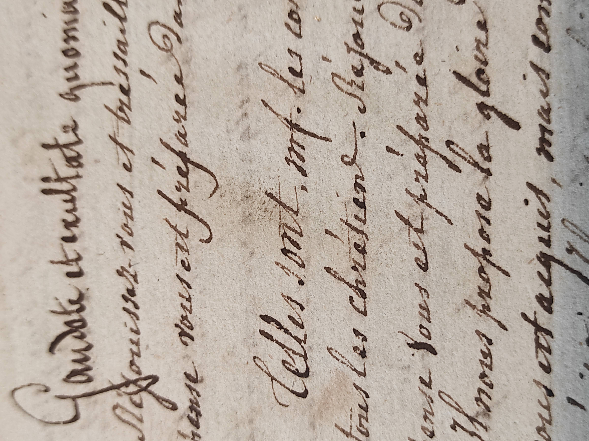
Le papier des trois cahiers présente un jaunissement prononcé — le fond de page vire au beige-crème soutenu, voire au brun paille dans les zones les plus exposées — résultant de la dégradation oxydative de la cellulose et de la lignine. Ce processus est irréversible et sa cinétique est documentée pour les papiers artisanaux européens, même si elle dépend fortement des conditions de conservation (température, hygrométrie, exposition à la lumière) : un jaunissement de ce degré, observé sur des papiers non traités conservés en milieu non contrôlé, est généralement compatible avec un vieillissement de l'ordre de 180 à 250 ans, soit une fourchette de fabrication approximativement comprise entre 1770 et 1845.1 Des taches de foxing de nature fongique attestent l'exposition répétée à des conditions d'hygrométrie élevée, caractéristiques d'une sacristie bretonne en granit soumise aux humidités marines du Trégor.
La dégradation est différentielle selon les cahiers et selon les folios au sein d'un même cahier. Le folio 12 du Ms. Brélévenez I, le folio 8 du Ms. Brélévenez II et les folios 11–12 du Ms. Brélévenez III présentent un effacement quasi total de l'encre sur la plus grande partie de leur surface — phénomène qui s'explique par leur position de page extérieure des cahiers posés à plat, non reliés et sans couverture protectrice, directement exposés à l'air, à l'humidité et aux manipulations. Ce détail fonctionnel confirme que ces manuscrits étaient activement utilisés — feuilletés, posés ouverts, rangés sans soin particulier — et non archivés ou reliés dès leur rédaction.
L'identification de la nature de l'encre constitue l'un des arguments chronologiques les plus solides dont dispose le paléographe, à condition de distinguer soigneusement les indices visuels des inférences qu'ils autorisent.
L'encre utilisée dans les trois manuscrits est, sans ambiguïté possible, une encre ferro-gallique (iron gall ink), produite par réaction chimique entre le sulfate de fer (vitriol vert) et des tanins extraits de galles de chêne (Quercus infectoria), avec addition de gomme arabique comme liant et d'eau comme solvant. Cette formule, attestée dès les traités médiévaux d'Héraclius et de Théophile (Xe–XIIe siècles), constitue la norme absolue de l'écriture manuscrite européenne jusqu'à l'apparition des encres industrielles à l'aniline dans la seconde moitié du XIXe siècle. Sa présence dans nos documents ne permet donc pas à elle seule de dater les manuscrits, mais sa teinte actuelle apporte des informations précieuses.
Fraîchement déposée, l'encre ferro-gallique présente un noir intense, légèrement bleuté ou verdâtre selon la proportion des composants. Au cours du vieillissement, sous l'effet de l'oxydation des sels ferreux en oxydes ferriques (Fe²⁺ → Fe³⁺), la couleur évolue progressivement vers le brun-ambré, le brun-roux ou le brun-ocre selon le degré d'oxydation atteint.2 Dans les trois manuscrits de Brélévenez, les macrophotographies révèlent une teinte homogène brun-noir à brun foncé, avec des zones plus claires correspondant aux passages d'encre plus diluée (fin de trempage). Ce degré de brunissement est compatible avec un dépôt datant de 180 à 230 ans, soit une fourchette de rédaction comprise approximativement entre 1795 et 1845.
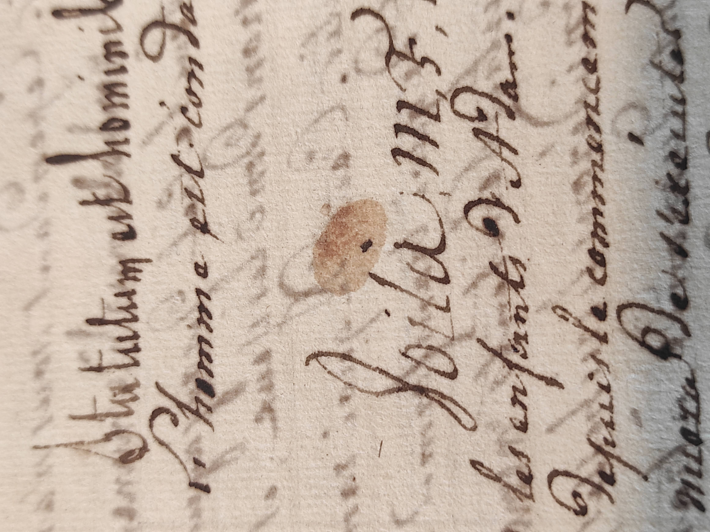
L'observation attentive de plusieurs folios révèle de légères variations de densité de l'encre — certaines lignes ou certains mots apparaissent plus sombres que d'autres au sein d'un même folio. Ce phénomène est la signature inévitable de la technique d'écriture à la plume trempée dans l'encrier : immédiatement après le trempage, la plume dépose une quantité d'encre plus importante, produisant un trait plus plein et plus foncé ; à mesure que la plume se vide, le trait s'allège jusqu'à devenir discontinu, forçant un nouveau trempage. Ces variations, parfaitement cohérentes avec l'usage d'une plume d'oie et d'un encrier séparé, excluent définitivement l'hypothèse d'un instrument à réservoir intégré (stylo à plume) dont la commercialisation ne date que des années 1880.
Par ailleurs, la correction supralinéaire visible au folio 5 du Ms. Brélévenez I présente une encre légèrement différente de celle du texte principal — plus foncée, plus chargée — ce qui indique que cette correction a été apportée lors d'une relecture ultérieure, avec un trempage frais dans l'encrier, par la même main mais à un moment différent de la rédaction initiale. Ce type d'auto-correction différée est le comportement ordinaire d'un prédicateur relisant ses notes avant une prédication et amendant son texte à la marge.
L'examen des caractéristiques du tracé permet d'identifier avec certitude l'instrument employé : une plume d'oie taillée en biseau (quill pen), vraisemblablement une rémige primaire de l'aile gauche — qui convient mieux aux droitiers car l'incurvation naturelle de la plume s'éloigne alors du regard lors de l'écriture — préparée à sec puis assouplie, avec un bec incisé au canif selon la technique décrite dans les traités de calligraphie du XVIIIe siècle, notamment la Calligraphie de Charles Paillasson (1763) et les articles correspondants de l'Encyclopédie.3 La plume d'oie est restée l'instrument scriptural dominant en France jusqu'aux années 1830–1840, date à laquelle les plumes d'acier de Joseph Gillott et de ses concurrents anglais commencèrent à se répandre à grande échelle.
La preuve de cet instrument réside dans la modulation du trait : les traits descendants sont sensiblement plus larges que les traits montants ou horizontaux, produisant le jeu de pleins et déliés caractéristique de la plume flexible à bec fendu. Cette modulation est impossible à reproduire avec une plume d'acier rigide de première génération et résulte mécaniquement de la flexion des deux branches du bec de la plume sous la pression de la main en mouvement descendant. On notera également les attaques de trait légèrement chargées en début de certains mots et les terminaisons effilées qui marquent le soulèvement de la plume en fin de mot.
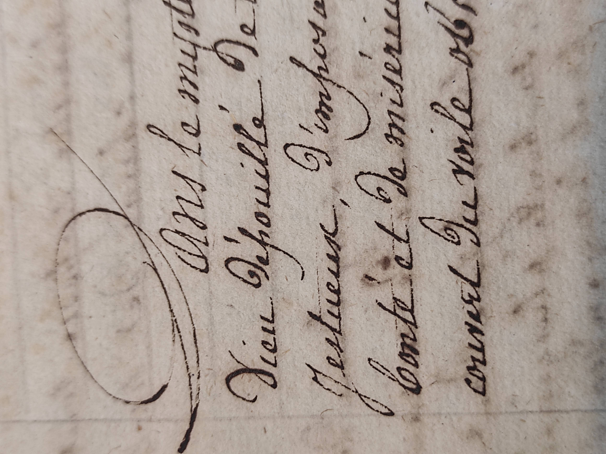
L'écriture des trois manuscrits appartient à la famille de la cursive française semi-formelle, héritière directe de ce que les maîtres calligraphes du XVIIe et du XVIIIe siècle appelaient la lettre française ou l'écriture de ronde, enseignée dans les collèges et séminaires de l'Ancien Régime comme technique de base de toute formation intellectuelle. Ce type d'écriture se distingue de la ronde commerciale (plus régulière, verticale, aux formes plus fermées, utilisée par les clercs de notaire et les marchands) et de la gothique (disparue de l'usage courant au XVIIe siècle) par son caractère à la fois lisible et personnel, alliant la discipline d'une formation calligraphique rigoureuse à la liberté d'exécution que confère l'usage quotidien de l'écriture. C'est l'écriture d'un homme instruit qui écrit vite mais avec soin, pour lui-même autant que pour un lecteur potentiel.
L'inclinaison générale de l'écriture est d'environ 10 à 15° vers la droite par rapport à la verticale, ce qui est conforme à la norme de la cursive française de l'époque (par opposition à l'anglaise, qui s'incline à 45° ou davantage, et qui ne se répand en France que progressivement au cours du XIXe siècle). Le module — rapport entre la hauteur des minuscules et celle des capitales — est d'environ 1 pour 2,5 à 3, ce qui est parfaitement régulier à l'échelle du corpus. La hauteur de corps des minuscules est d'environ 3 à 4 mm selon les folios et les moments de rédaction, avec une tendance à la réduction dans les parties plus rapidement exécutées.
Le traitement des lettres capitales est particulièrement instructif. On observe dans les trois cahiers un usage systématique de lettrines ornées agrandies pour marquer les grandes articulations du discours : dans le Ms. Brélévenez I, la section numérotée III est introduite par un grand C majuscule tracé d'un seul geste en volute ; au folio 3 du même cahier, les mots UNE CHOSE devrait sont composés en capitales de taille double, constituant un titre de section visible de loin. Toutes ces capitales présentent les mêmes caractéristiques morphologiques (attaques en volute, terminaisons à empattement, proportions constantes), ce qui confirme qu'elles sont toutes du même scripteur.
Parmi les traits diagnostiques les plus fiables pour la datation et l'identification du scripteur, l'absence absolue du s long (ſ) mérite une attention particulière. Sur l'ensemble des quarante folios examinés, portant plusieurs milliers d'occurrences du phonème /s/ en position médiane, on ne relève pas une seule occurrence du s long. Cette absence systématique constitue l'argument chronologique le plus fort en faveur d'une rédaction postérieure à 1780 environ.4
Le folio 1 du Ms. Brélévenez I présente, dans la marge de reliure gauche, des annotations portées perpendiculairement au texte principal, dans un sens de lecture différent, sur deux registres serrés. L'examen attentif de ces annotations — leur module nettement réduit (lettres de 2 à 3 mm contre 4 à 5 mm pour le corps principal), leur inclinaison sensiblement moins marquée vers la droite, leurs habitudes de liaison différentes et leurs abréviations propres — établit sans contestation possible qu'elles sont d'une seconde main, distincte de celle qui a rédigé le corps du sermon. Il s'agit vraisemblablement d'un lecteur ecclésiastique — censeur diocésain, confrère plus expérimenté, supérieur hiérarchique — ayant exercé un contrôle critique sur le texte avant ou après sa première prédication.
La question de l'unité ou de la pluralité des mains est cruciale pour l'interprétation du corpus. Plusieurs analyses préliminaires ont proposé deux scripteurs distincts, invoquant notamment les différences de soin graphique entre les trois sermons. Cette hypothèse doit être soigneusement examinée et, au terme de l'analyse, rejetée pour ce qui concerne le corps des textes.
En effet, si l'on compare systématiquement les formes letterales à travers les quarante folios, aucune discontinuité irréductible n'apparaît. La formation du f à descente sous la ligne de base avec boucle ascendante à gauche est identique dans les trois cahiers ; le J majuscule présente dans tous les cas une longue descente avec crochet terminal droit ; la liaison des groupes ou se fait sans levée de plume de la même façon ; le point-virgule est systématiquement tracé avec une virgule longue et allongée ; les majuscules ornées partagent les mêmes attaques en volute et les mêmes proportions. Ces constantes morphologiques, observées sur des milliers d'occurrences à travers plusieurs années de rédaction vraisemblable, ne peuvent être que les marques d'une seule et même main.
Les variations observées — le Ms. Brélévenez II est le plus formel et le plus soigné, le Ms. Brélévenez III est le plus rapide et le plus cursif, le Ms. Brélévenez I est intermédiaire — s'expliquent entièrement par la variation normale d'un individu unique selon son état de fatigue, la disponibilité du temps, l'importance accordée à tel ou tel sermon dans sa pratique pastorale, et le moment de la rédaction. On retrouve des variations de cet ordre dans les manuscrits autographes de Bossuet ou de Massillon, sans que personne n'en ait conclu à une pluralité de mains.
Au-delà de la paléographie stricte, le texte lui-même contient des indices linguistiques et lexicaux qui permettent d'affiner la datation. Il convient ici de distinguer soigneusement les marqueurs de formation — qui datent la culture intellectuelle du scripteur, non nécessairement la rédaction — des marqueurs d'usage, qui témoignent de la langue vivante au moment de l'écriture.
Trois syntagmes lexicaux, présents dans le corpus, sont particulièrement discriminants pour la datation. Le premier est le terme « esprits forts », employé au folio 7 du Ms. Brélévenez II pour désigner les libertins qui comptent sur un repentir de dernière heure sans avoir réformé leur vie. Ce syntagme, devenu d'usage courant dans la littérature apologétique catholique seulement à partir des années 1740–1760, en réaction aux Lettres philosophiques de Voltaire (1734) et à l'Encyclopédie (1751–1772), est caractéristique du vocabulaire polémique de la seconde moitié du XVIIIe siècle.5 Le second est le syntagme « nos prétendus savants » du Ms. Brélévenez III, qui appartient à la même veine anti-philosophique et connaît une distribution temporelle similaire. Le troisième est l'emploi du terme « phases » dans un sens métaphorique élargi, usage figuré qui ne se répand dans la prose française qu'après Buffon et l'Encyclopédie, c'est-à-dire après 1750.6
L'original manuscrit du Ms. Brélévenez I porte, dès son incipit, deux variantes latines clairement visibles sur les photographies : « quomiam » pour quoniam (confusion vocalique dans la syllabe finale), et « calis » pour cœlis (réduction du diphtongue œ au simple a). Ces formes ne sont pas des fautes d'inattention ordinaires : la première est une haplographie récurrente dans les manuscrits de clercs qui citent de mémoire ; la seconde est un phénomène phonologique documenté dans le latin ecclésiastique pratiqué en Bretagne et en Normandie.7 Ces indices révèlent un latiniste formé et compétent, qui possède ses citations de mémoire et les reproduit de façon cursive, avec les imperfections inhérentes à la récitation mentale — non un philologue qui consulte ses textes.
La structure formelle des trois sermons obéit à un plan-type très précis, héritier direct de la tradition homiléticque sulpicienne telle qu'elle fut codifiée au grand séminaire de Saint-Sulpice à Paris sous l'influence de Jean-Jacques Olier (1608–1657) et diffusée dans l'ensemble du réseau séminariste français au XVIIe et au XVIIIe siècle : citation inaugurale scripturaire en latin, suivie immédiatement de sa traduction française ; bref exorde établissant le lien entre la citation et la situation de l'auditoire ; développement en deux ou trois points numérotés, séparés par des transitions clairement signalées ; application pastorale directe à la fin de chaque point ; péroraison suivie d'une prière ou d'une invocation. Cette structure est celle qu'on trouve dans les Sermons de Massillon (1663–1742), de Bourdaloue (1632–1704) et de Bossuet (1627–1704), dont les œuvres servaient de modèles dans les séminaires bretons jusque dans les premières décennies du XIXe siècle.8
Les trois sermons abordent des thèmes complémentaires de la théologie morale et de l'eschatologie catholique post-tridentine. Le Ms. Brélévenez I traite de la difficulté et de la nécessité du salut — thème qui réfute la présomption, ce péché caractéristique de ceux qui comptent sur la miséricorde divine sans se donner la peine de mériter le salut —, puis se conclut par un sermon pour l'inauguration d'une statue et le dépôt de reliques dans une chapelle communautaire. Le Ms. Brélévenez II est un sermon classique sur la mort universelle et ses conséquences éternelles, fondé sur le verset de l'Épître aux Hébreux. Le Ms. Brélévenez III est un sermon eucharistique d'une richesse théologique remarquable, exposant la présence réelle, sa supériorité sur tous les miracles de l'Ancien Testament, et appelant les fidèles à ne pas se priver du bonheur de la communion.
Le sermon annexe du folio 13 du Ms. Brélévenez I est le document le plus informatif pour la datation et la localisation du corpus. Le prédicateur s'adresse à une assemblée réunie pour une cérémonie solennelle dans « la chapelle de notre bienheureuse communauté » afin d'y inaugurer la statue d'une sainte et d'y déposer des reliques. L'expression « notre bienheureuse communauté » est une formule canonique désignant une communauté religieuse régulière possédant sa propre chapelle claustraire. Le ton du sermon est d'une émotion intense, parfaitement intelligible comme l'expression d'une communauté qui célèbre le retour à une vie normale après une période de persécution et de dispersion révolutionnaire.
La Révolution française a en effet provoqué entre 1789 et 1801 la dispersion forcée de toutes les communautés religieuses, la confiscation de leurs biens et de leurs chapelles, et la destruction ou la dispersion de leurs reliques et de leurs statues. La reconstruction d'un espace de culte communautaire, l'inauguration d'une nouvelle statue et le dépôt de reliques constituent, dans ce contexte, un acte de restauration symbolique puissant. Ce scénario s'inscrit dans la période qui suit le Concordat de 1801, au cours de laquelle les communautés religieuses bretonnes commencèrent à se reconstituer progressivement ; si les premières cérémonies de restauration sont possibles dès 1802–1808, une inauguration solennelle avec bénédiction de reliques serait plus vraisemblable après 1805–1808 et plus assurée encore après 1814.
Les analyses précédentes permettent désormais de confronter les datations proposées par diverses expertises antérieures et d'en arbitrer la vraisemblance au regard de l'ensemble des preuves.
La datation du corpus repose sur deux catégories d'indices de nature différente, dont le croisement permet d'établir une fourchette de rédaction crédible.
Les indices matériels — vieillissement du papier, brunissement de l'encre ferro-gallique, usage de la plume d'oie — sont des estimations par nature approximatives. Le degré de jaunissement du papier et le brunissement de l'encre sont compatibles avec un dépôt datant de 180 à 230 ans, soit une rédaction comprise entre 1795 et 1845. La plume d'oie, restée d'usage dans les presbytères bretons bien après l'apparition des plumes d'acier Gillott dans les années 1830, ne constitue pas un terminus ante quem utilisable. Ces données matérielles délimitent un cadre large ; elles ne permettent pas à elles seules de localiser précisément la rédaction dans ce cadre.
Les preuves textuelles internes sont d'une tout autre fiabilité. Trois sermons contiennent des références à des événements datés qui fournissent des termini post quem incontestables. Le sermon XVII mentionne explicitement le choléra de « 1832 et 1833 » et les « chemins de fer » comme réalité contemporaine connue de l'auditoire — ce document ne peut être antérieur à 1833 ; la référence aux chemins de fer suggère vraisemblablement une date postérieure à 1837. Le sermon XXV porte dans son texte latin la date du 18 juillet 1833 comme décision doctrinale approuvée par l'évêque de Saint-Brieuc. Le sermon XXIV cite la série des attentats contre Louis-Philippe — Fieschi (1835), Alibaud (1836), Meunier (1836), Darmès (1840) — et ne peut être antérieur à 1840. Ces trois bornes convergent pour situer le cœur de la production du corpus dans les années 1833–1845. Pour les sermons dépourvus de marqueur interne précis, la fourchette matérielle reste la référence, avec une borne inférieure probable vers 1800–1810 pour les pièces les plus anciennes du corpus.
Il convient de distinguer soigneusement la date de formation du ou des scripteurs — qui remonte vraisemblablement aux premières décennies du XIXe siècle — de la date de rédaction des sermons, qui s'étale sur plusieurs décennies. La rhétorique sulpicienne et la théologie tridentine du corpus datent la formation de ses auteurs, non leurs cahiers.
| Datation | 1800–1845 (fourchette révisée de rédaction). Centre de gravité probable : 1820–1845. Trois sermons datés de l'intérieur : XVII et XXV après 1833, XXIV après 1840. Formation du ou des scripteurs : vraisemblablement 1800–1820. |
| Scripteur(s) | Deux mains probables : un scripteur principal (groupe A, sermons français I–XVII, XXI, XXIV, XXV) et un second scripteur pour les sermons en langue bretonne (groupe B, sermons XI, XV, XVIII–XX, XXII–XXIII). L'hypothèse d'un unique prédicateur bilingue pratiquant deux registres graphiques reste à considérer. Une troisième main possible pour les annotations marginales du Ms. Brélévenez I, folio 1. |
| Instrument | Plume d'oie taillée en biseau, à bec fendu flexible. Modulations de plein et délié organiques incompatibles avec une plume d'acier. Encrier séparé avec trempage répété. |
| Encre | Ferro-gallique, teinte brun-noir à brun ambré par oxydation des sels ferreux. Vieillissement compatible avec une rédaction entre 1800 et 1850. Correction au folio 5 Ms. I d'encre légèrement plus foncée (relecture différée). |
| Support | Papier vergé artisanal (Ms. I et II), papier vergé réglé (Ms. III). Grammage moyen (70–90 g/m²). Jaunissement et foxing compatibles avec 180–230 ans d'exposition en milieu humide. |
| Écriture | Groupe A (français) : cursive française lettrée semi-formelle, inclinaison 10–20° droite, absence totale du s long, lettrines ornées systématiques. Groupe B (breton) : registre graphique distinct, module plus compact, b à haste droite sans boucle, majuscules de morphologie différente. |
| Formation | Séminaire diocésain breton (Tréguier ou Saint-Brieuc), vraisemblablement début XIXe siècle. Rhétorique sulpicienne, théologie tridentine, latin courant de qualité, culture patristique (Pères du désert, Jean Chrysostome, Paul, Bernard). Bilinguisme breton-français actif. |
| Condition | Prêtre(s) du clergé séculier du Trégor, probablement curé ou vicaire, aumônier d'une communauté religieuse féminine locale, actif(s) principalement sous la Monarchie de Juillet (1830–1848). |
| Statut docs. | Cahiers de travail homiléticques semi-définitifs. Destinés à la prédication effective en chaire (paroisse) et en chapelle (communauté). Non reliés, utilisés couramment, d'où la dégradation différentielle des derniers folios. |
L'ensemble des éléments recueillis converge vers le portrait d'un ou de deux hommes remarquables dans leur contexte : des prêtres bretons de la première moitié du XIXe siècle, formés à une époque où la culture ecclésiastique française était encore profondément imprégnée du Grand Siècle, mais confrontés dans leur ministère quotidien aux défis intellectuels et pastoraux des décennies post-révolutionnaires.
Sa formation est celle d'un humaniste chrétien complet. Il maîtrise le latin de façon active — il cite de mémoire, et ses rares imperfections (le quomiam, le calis) sont celles d'un locuteur oral qui n'a pas sous les yeux le texte qu'il cite, non celles d'un ignorant. Sa culture patristique est large : il convoque sans effort Jean Chrysostome, Augustin, Bernard de Clairvaux, Paul, les Pères du désert (Antoine, Hilarion, Arsène). Sa connaissance de l'Écriture est intériorisée au point que les citations surgissent naturellement dans le tissu de la prose, sans rupture de style ni d'élan.
Son tempérament de prédicateur est celui d'un orateur de conviction, non d'un scribe mécanique. La richesse des figures de style — l'hypotypose qui fait voir le naufrage en pleine mer ou le champ de bataille, l'apostrophe aux martyrs et aux vierges, la gradation ascendante qui mène du sol de l'église jusqu'au troisième Ciel avant de revenir sur l'autel — révèle un homme qui pense en images et qui sait que ses auditeurs ont besoin d'être émus avant d'être convaincus.
Sa spiritualité, enfin, est celle d'un mystique pastoral — non d'un contemplatif retiré du monde, mais d'un homme qui ne peut parler de Dieu sans éprouver ce qu'il dit, et dont la conviction profonde transparaît dans chaque mouvement de la plume. L'insistance sur la présence réelle dans l'Eucharistie, sur la récompense céleste comme moteur de la vie chrétienne, sur la mort comme réalité incontournable à laquelle on ne saurait s'aveugler — ces trois thèmes ne sont pas des exercices académiques mais des convictions de vie.
L'analyse paléographique, codicologique, linguistique et théologique du corpus de Brélévenez dessine le portrait d'un fonds homilétique. Ces cahiers ne sont pas l'héritage figé d'un clergé survivant à la Révolution, mais le produit vivant d'un ou de deux prédicateurs actifs sous la Monarchie de Juillet, probablement entre les années 1820 et 1845, confrontés dans leur ministère quotidien aux défis idéologiques, sociaux et pastoraux de leur temps. La plume d'oie, l'encre ferro-gallique et la rhétorique sulpicienne ne sont pas ici les signes d'un archaïsme : ce sont les outils ordinaires d'hommes d'Église qui prêchaient en français et en breton depuis les chaires du Trégor, au milieu d'un monde que le fouriérisme, le saint-simonisme et les régicides commençaient à inquiéter profondément.
Les marqueurs textuels internes fournissent les ancrages chronologiques les plus solides. Le choléra de 1832–1833 nommé dans le sermon XVII, la date du 18 juillet 1833 inscrite dans le corps du sermon XXV, les attentats successifs contre Louis-Philippe culminant avec Darmès en 1840 dans le sermon XXIV : ces trois preuves internes, indépendantes les unes des autres, convergent pour établir que la rédaction du corpus s'est prolongée au moins jusqu'en 1840, et vraisemblablement au-delà. Les données matérielles — vieillissement du papier, brunissement de l'encre, usage de la plume d'oie — corroborent cette fourchette sans la contredire.
Les manuscrits présentés dans cette seconde partie appartiennent au même corpus homilétique que les trois sermons analysés dans la première partie. L'analyse comparative des macrophotographies suggère la présence de deux mains distinctes au sein de l'ensemble : un premier scripteur (groupe A), responsable de la majorité des sermons en français, et un second scripteur (groupe B), auteur des sermons en langue bretonne. Ces deux registres graphiques partagent la même tradition sulpicienne et le même instrument scriptural, ce qui rend plausible — sans l'établir avec certitude — l'hypothèse d'un unique prédicateur bilingue. La question reste ouverte. Chaque notice signale discrètement l'appartenance graphologique du document à l'un ou l'autre groupe.
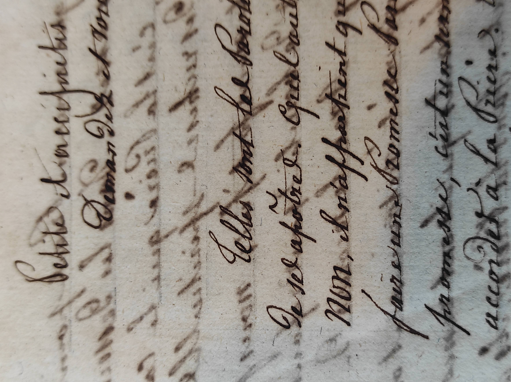
Ce sermon sur la mort, construit autour du verset d'Hébreux 9, 27 (Statutum est hominibus semel mori), constitue un texte ambitieux et structuré. Divisé en cinq parties distinctes — la nécessité de mourir, l'incertitude de l'heure, la préparation à bien mourir, la pensée de la mort comme discipline spirituelle, et le jugement après la mort — il déploie une rhétorique de la memento mori héritée de la grande tradition homilétique française du XVIIe siècle. Le prédicateur multiplie les références scripturaires (Prophètes, Psaumes, Épîtres pauliniennes) et les exemples tirés de l'histoire sainte (Alexandre le Grand, Balthasar, Antiochus) ou de la vie des Pères du désert (Antoine, Hilarion, Arsène). L'argumentation est à la fois dogmatique (la mort comme conséquence du péché originel), ascétique (la méditation de la mort comme remède aux passions) et eschatologique (la mort comme passage vers le jugement particulier et l'éternité). On y retrouve une conception augustinienne de la condition humaine, associée à une spiritualité du détachement qui évoque saint Bernard et l'école française de spiritualité. Malgré la dimension macabre et pénitentielle du propos, le ton demeure pastoral : il s'agit moins d'épouvanter que de susciter une vigilance lucide et confiante face à la finitude. L'appendice manuscrit, ajouté en marge du texte principal, contient des fragments d'exhortations adressées à des paroissiens tentés par l'anticléricalisme ou l'indifférence religieuse — témoignage précieux de tensions sociales et idéologiques traversant la Bretagne rurale au XVIIIe siècle ou au début du XIXe.
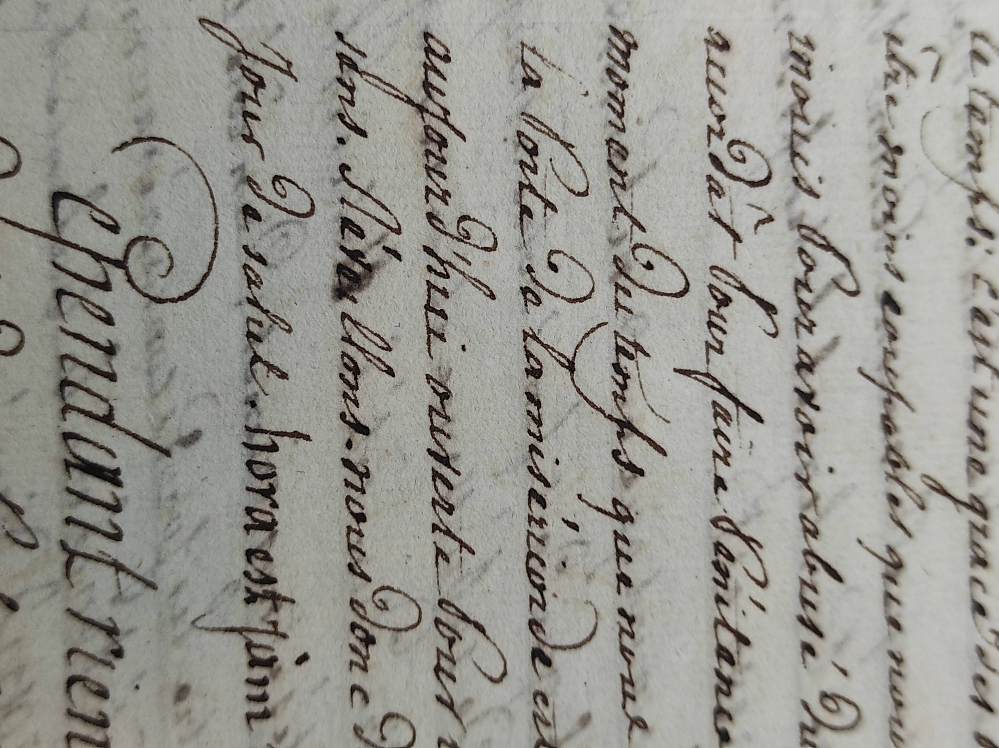
Ce sermon moral sur l'emploi du temps, fondé sur Galates 6, 10 (Dum tempus habemus operemur bonum), développe une méditation ascétique sur la brièveté de la vie et l'urgence du salut. La structure argumentative est rigoureuse : après avoir établi la valeur théologique du temps (créature divine, prix du sang du Christ), le prédicateur dénonce l'aveuglement des mondains qui dilapident ce capital spirituel, puis insiste sur l'irréversibilité du temps perdu — thème augustinien par excellence. La référence à Marie-Madeleine et à David illustre une tension théologique subtile : si la pénitence efface le péché, elle ne peut annuler le fait historique de l'avoir commis (fuisse in aeternum manet). Cette distinction entre le pardon divin et l'inscription indélébile du péché dans l'histoire de l'âme révèle une conscience aiguë de la temporalité comme dimension constitutive de la destinée humaine. Le sermon mobilise une rhétorique de l'urgence (tempus breve est, tempus non erit amplius) qui vise à provoquer la conversion immédiate. On y retrouve les grands lieux communs de la prédication classique sur la fugacité du temps, mais traités avec une densité scripturaire remarquable et une progression dramatique qui culmine dans l'image du jugement dernier et de la balance divine. L'exhortation finale reprend la citation augustinienne célèbre sur la coopération nécessaire de l'homme à son salut, inscrivant le propos dans une théologie de la grâce équilibrée entre souveraineté divine et libre arbitre.
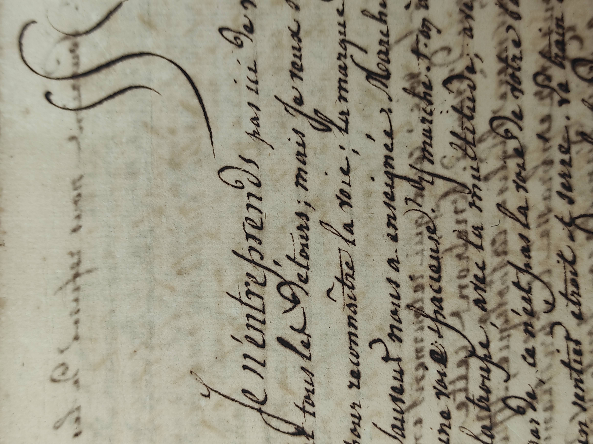
Ce sermon eucharistique, fondé sur le Psaume 110 (Memoriam fecit mirabilium suorum), déploie une théologie de la présence réelle remarquablement construite. Le prédicateur trace une histoire sacrée de la présence divine, depuis le paradis terrestre jusqu'à l'institution eucharistique, présentée comme l'accomplissement des promesses faites aux Patriarches. L'argumentation procède par une double amplification : d'abord l'anéantissement progressif de Dieu (de la création à l'Incarnation, puis à l'Eucharistie), ensuite la comparaison systématique entre les privilèges de l'Ancien Testament et ceux du chrétien communiant. Le ton est celui de l'émerveillement théologique tempéré par une exhortation morale finale. On note l'absence de polémique anti-protestante explicite, mais une insistance marquée sur la réalité substantielle de la présence (réellement avec son corps, son sang, son âme, sa Divinité). La référence à saint Jean Chrysostome et l'usage de citations latines intégrées au discours français témoignent d'une prédication savante, destinée probablement à un auditoire lettré ou clerical. L'appel final à la communion fréquente (chaque jour nous pouvons jouir) reflète les orientations pastorales post-tridentines encourageant la pratique eucharistique régulière.
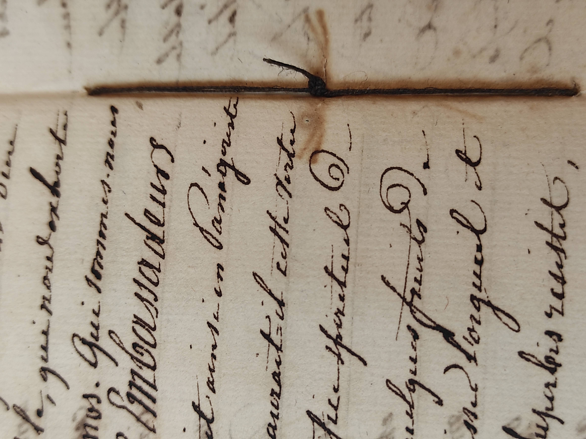
Ce sermon méta-homilétique, fondé sur Jean 1, 23 (Ego vox clamantis in deserto), constitue une pièce rare dans le corpus : une prédication sur la prédication elle-même, une réflexion sur les conditions d'efficacité de la parole divine. Le prédicateur y développe une ecclésiologie de la parole inspirée de saint Paul, établissant une analogie audacieuse entre le sacrement eucharistique et le « sacrement » de la prédication (praeditatio evangelica est quasi sacramentum et mysterium). Dans les deux cas, l'apparence sensible (les espèces du pain, la voix de l'homme) cache une réalité divine que seule la foi discerne. L'argumentation déploie une double critique : celle de l'auditoire mondain qui réduit le sermon à un discours humain soumis à la critique esthétique, et celle, sous-jacente, d'une éloquence sacrée trop soucieuse de plaire (factus sum velut aes sonans aut cymbalum tinniens). Le ton oscille entre dignité sacerdotale et plainte amère : le prédicateur se sent réduit au rôle de « discoureur frivole » (discursores frivoles). La référence à l'échec relatif de Jean-Baptiste puis de saint Paul (à Lystres) sert de consolation théologique face à l'inefficacité pastorale. On note l'absence de développement doctrinal au profit d'une exhortation morale centrée sur les dispositions intérieures de l'auditeur : foi, humilité, docilité. Ce sermon révèle les tensions du ministère de la parole au XVIIIe siècle, pris entre exigences rhétoriques de la société lettrée et finalité spirituelle de la conversion.
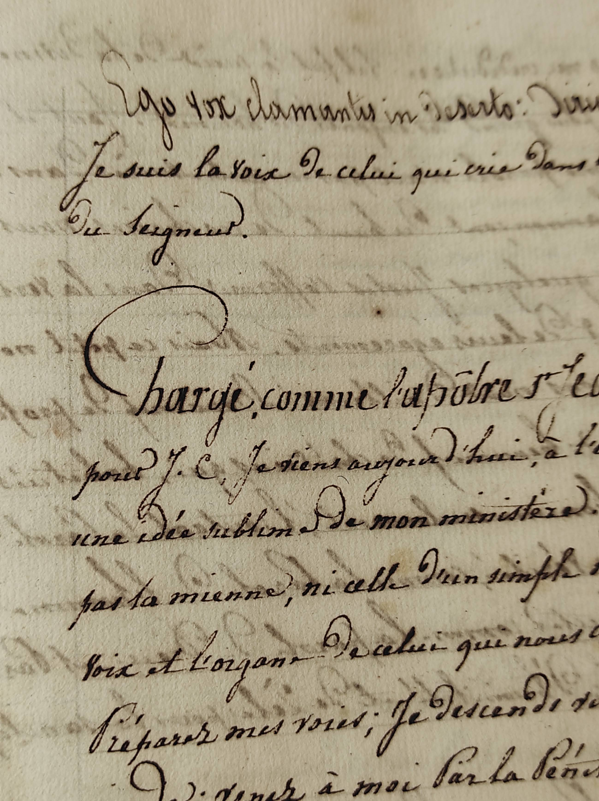
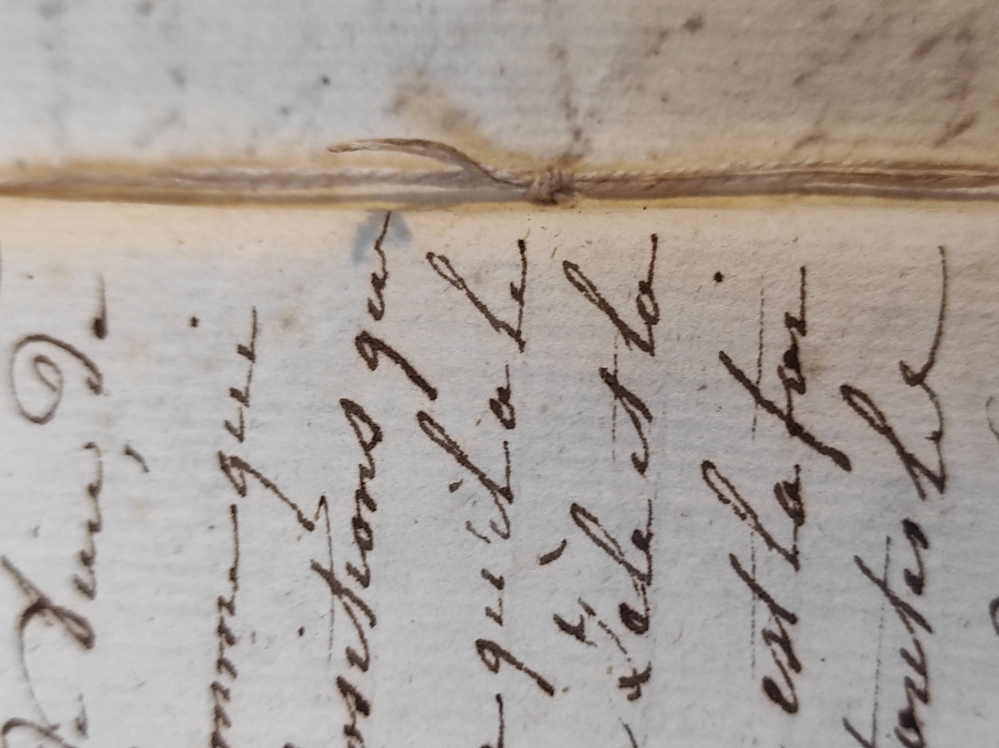
Ce sermon dogmatique et moral, fondé sur Romains 9, 33 (Ecce pono in Sion lapidem offensionis angularem, electum, pretiosum), traite de la controverse théologique fondamentale entre foi et œuvres, débat central de la période post-tridentine. Le prédicateur développe une position catholique classique, nuancée et équilibrée, évitant la double écueil du fidéisme luthérien (la foi seule suffit) et du pélagianisme (les œuvres seules sauvent). L'argumentation procède en deux temps : d'abord l'affirmation de la nécessité absolue de la foi pour le salut (sine fide impossibile est placere Deo), présentée comme lumière salutaire, remède aux plaies spirituelles et porte du Ciel ; ensuite l'insistance sur l'insuffisance d'une foi morte, stérile, sans les œuvres qui l'actualisent (fides sine operibus mortua est). La référence aux grandes figures bibliques (Abraham, Moïse, David) et aux martyrs sert à illustrer le modèle d'une « foi vive, héroïque et féconde ». On note une rhétorique de la gratitude (pour le don de la foi) contrebalancée par une exhortation morale sévère contre la tiédeur et l'indifférence religieuse. Le développement sur le jeune chrétien qui abandonne progressivement ses pratiques dévotionnelles jusqu'à tomber dans l'athéisme révèle une préoccupation pastorale aiguë face à la déchristianisation des mœurs. L'absence de polémique explicite contre le protestantisme n'empêche pas une réfutation implicite de la doctrine de la justification par la foi seule. La conclusion eschatologique (évocation du jugement dernier fondé sur les œuvres) inscrit le propos dans une perspective de conversion urgente caractéristique de la prédication baroque.
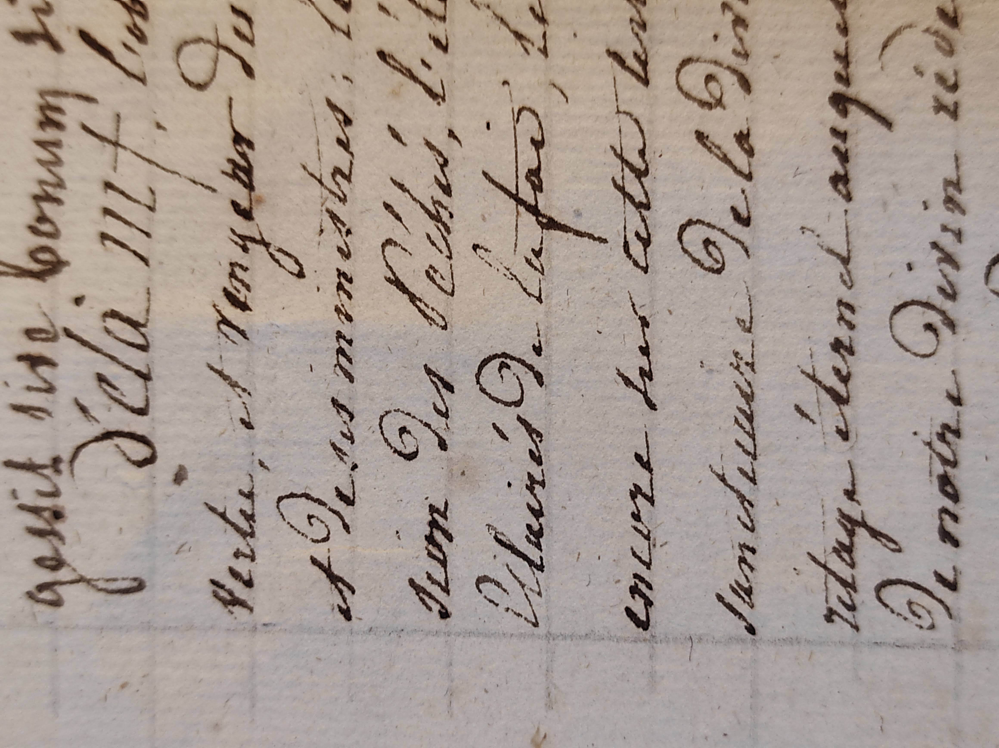
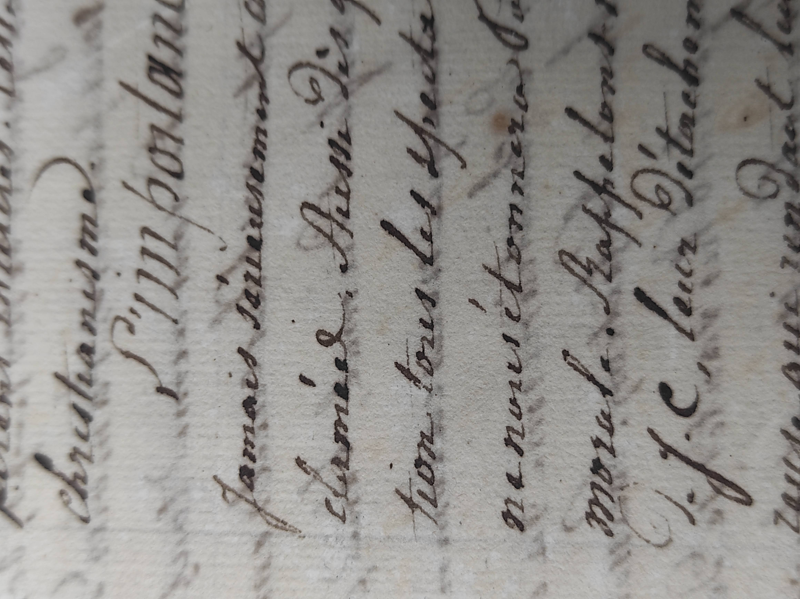
Ce discours apologétique, fondé sur Actes 17, 28 (In quo vivimus, movemur et sumus), constitue une pièce remarquable de défense du christianisme face aux Lumières. Le prédicateur déploie une double démonstration : l'excellence intrinsèque de la morale chrétienne et le caractère miraculeux de son établissement historique. L'argumentation relève de l'apologétique classique mais intègre des éléments empruntés au vocabulaire philosophique du XVIIIe siècle (« intelligence », « science de l'esprit », « rapports dans les sociétés »). La comparaison systématique entre philosophie antique et christianisme — topos de la littérature patristique repris par Pascal — vise à démontrer la supériorité morale de l'Évangile. La référence à Socrate « déshonoré » et aux « coryphées des sectes » (probablement stoïciens et épicuriens) s'inscrit dans une tradition polémique remontant à Lactance et Augustin. Plus audacieuse est la citation implicite de Rousseau (« l'Évangile est divin... jamais la vertu n'a parlé un si doux langage »), retournée contre l'incrédulité moderne : le prédicateur utilise l'autorité même d'un philosophe des Lumières pour confondre le siècle. La seconde partie, consacrée à l'établissement miraculeux du christianisme, mobilise les lieux classiques de l'apologétique historique : faiblesse des apôtres, rapidité de la conversion, fécondité du martyre (sanguis martyrum semen christianorum, Tertullien). L'évocation finale de l'arche de Noé comme figure de l'Église inscrit le propos dans une ecclésiologie de la permanence face aux tempêtes révolutionnaires. Ce sermon révèle un prédicateur cultivé, au fait des débats de son temps, capable d'intégrer la controverse philosophique à la prédication traditionnelle.
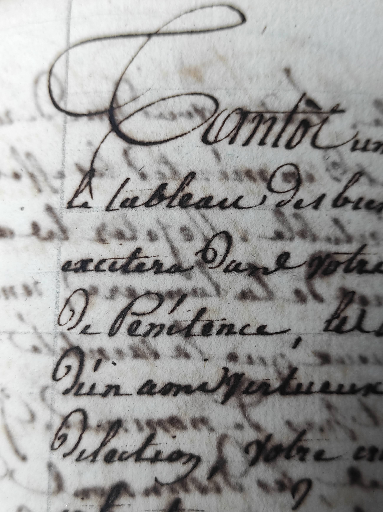
Ce sermon moral et ascétique, fondé sur l'Ecclésiastique 3, 27 (Qui amat periculum, peribit in illo), déploie l'allégorie classique de la barque de l'Église naviguant sur la mer orageuse du monde. Cette métaphore nautique, héritée des Pères de l'Église et développée par l'homilétique médiévale, structure l'ensemble du propos : le chrétien ne doit s'aventurer dans le monde qu'accompagné du Christ, à l'exemple des disciples n'entrant dans la barque qu'à la suite de leur Maître. L'argumentation entrelace trois registres : l'exégèse allégorique (la tempête apaisée, Pierre marchant sur les eaux), l'exemplarité vétérotestamentaire (Esther, les trois jeunes Hébreux à Babylone, Judith) et l'exhortation pastorale directe contre la tiédeur spirituelle. La critique du « respect humain », cette « lâche pusillanimité qui enlève plus d'âmes à Jésus-Christ que les tyrans », révèle une préoccupation centrale de la spiritualité moderne face à la pression sociale et à la « civilité mondaine ». Le développement sur l'éducation chrétienne des enfants, greffé sur le corps principal du sermon, témoigne des priorités pastorales post-tridentines : la famille comme cellule de transmission de la foi, les parents comme « image et représentants de Dieu ». L'image remarquable de l'éducation religieuse comparée aux « peintures d'un ancien édifice que l'on retrouve au milieu des ruines » révèle une conscience aiguë de la fragilité de la foi dans un monde sécularisé. La conclusion apocalyptique, évoquant la chute de Jérusalem (« nuit désastreuse où tomba cette ville antique »), fonctionne comme avertissement eschatologique contre l'apostasie collective. Ce sermon illustre la tension caractéristique de la pastorale du XVIIIe siècle entre insertion nécessaire dans le monde et préservation de l'identité chrétienne.
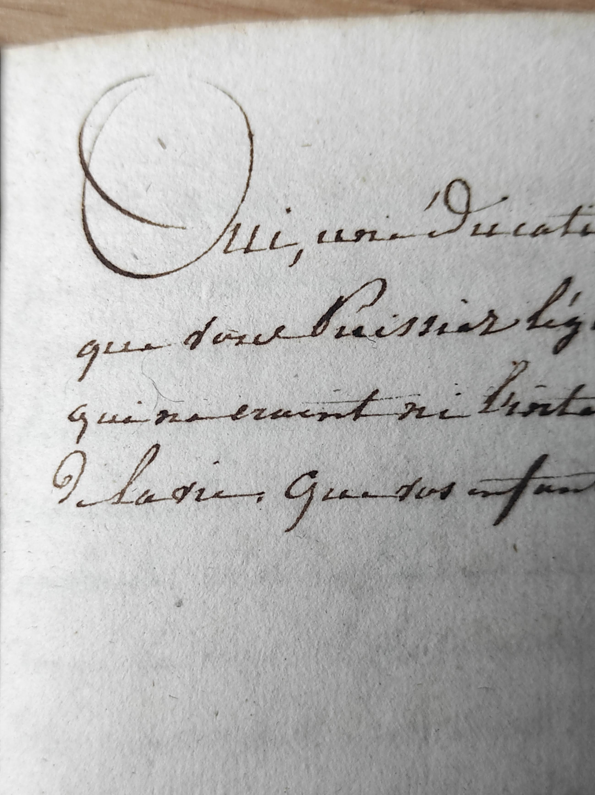
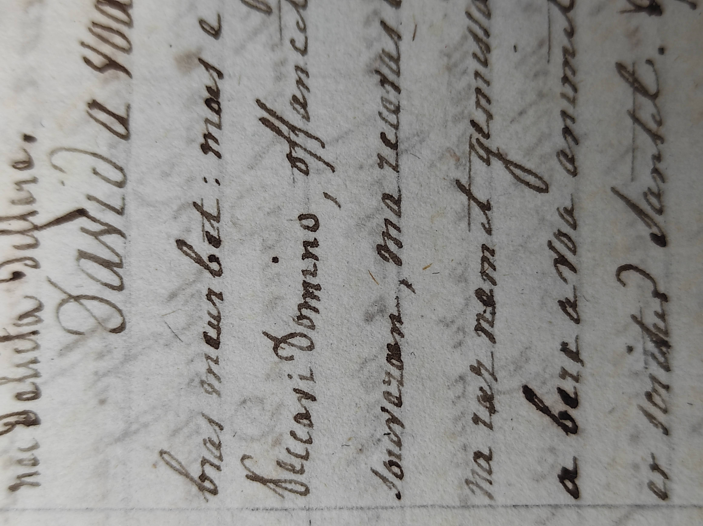
Ce sermon sur la contrition, rédigé en breton et fondé sur la parole de II Reg. XII — Dominus quoque transtulit peccatum tuum —, est l'un des documents les plus rigoureusement construits du corpus sur le plan de la théologie sacramentelle. Le prédicateur y développe une quadripartition classique de la contrition (surnaturelle, intérieure, universelle, souveraine) qui s'inscrit dans la tradition tridentine de la pénitence, telle qu'elle fut systématisée par les théologiens post-conciliaires et diffusée dans la pastorale française et bretonne du XVIIIe et du début du XIXe siècle. Cette architecture en quatre points témoigne d'une formation scolastique solide : chaque propriété est définie, illustrée par un exemple scripturaire ou hagiographique, puis appliquée à la situation concrète des fidèles. L'exemple de saint Pierre, central dans la partie sur la contrition surnaturelle, est traité avec une précision exégétique notable — le regard du Christ comme acte de grâce antécédente — qui dépasse le simple usage homilétique. L'insistance sur la contrition souveraine, c'est-à-dire sur la nécessité d'aimer Dieu par-dessus tous les biens temporels, est développée avec une fermeté pastorale caractéristique d'une prédication de mission ou de retraite paroissiale plutôt que d'un sermon dominical ordinaire. Le choix du breton comme langue de rédaction situe ce document dans un contexte de pastorale populaire spécifique au diocèse de Tréguier, où le bilinguisme liturgique et homilétique était une nécessité pratique et une tradition ancienne.
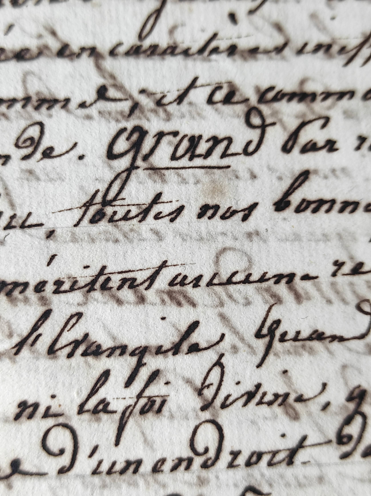
Ce sermon sur le grand commandement de l'amour de Dieu, fondé sur le verset du Deutéronome (6, 5) repris par l'Évangile, est l'un des textes théologiquement les plus ambitieux du corpus. Le prédicateur y déploie une architecture rhétorique soignée, ouverte sur l'anecdote de l'anachorète scandalisé par les controverses scolastiques, procédé classique dans la tradition des sermons de mission pour opposer la simplicité de la foi vécue à la vanité de la spéculation. La partie centrale — cinq propriétés du grand commandement (ancienneté, nécessité, étendue, dignité, durée) — révèle une formation solide dans la théologie morale post-tridentine et une familiarité évidente avec la littérature des prédicateurs français du XVIIe siècle, en particulier Bourdaloue et Massillon, dont plusieurs formulations semblent résonner dans le texte. La tripartition des bienfaits divins selon les ordres de la nature, de la grâce et de la gloire est un schème augustinien classique, ici mis au service d'une démonstration ascendante qui conduit le fidèle à reconnaître l'obligation morale de la charité non comme contrainte mais comme réponse. La conclusion, avec la figure de la femme d'Alexandrie portant eau et flambeau, témoigne d'un sens rhétorique développé et d'une culture patristique ou hagiographique étendue — cette image, d'une intensité saisissante, est caractéristique d'une prédication destinée à émouvoir un auditoire populaire tout en maintenant un niveau théologique élevé. L'ensemble suggère un prédicateur formé dans un grand séminaire français, prêchant en paroisse rurale avec des notes élaborées plutôt qu'un texte entièrement improvisé.
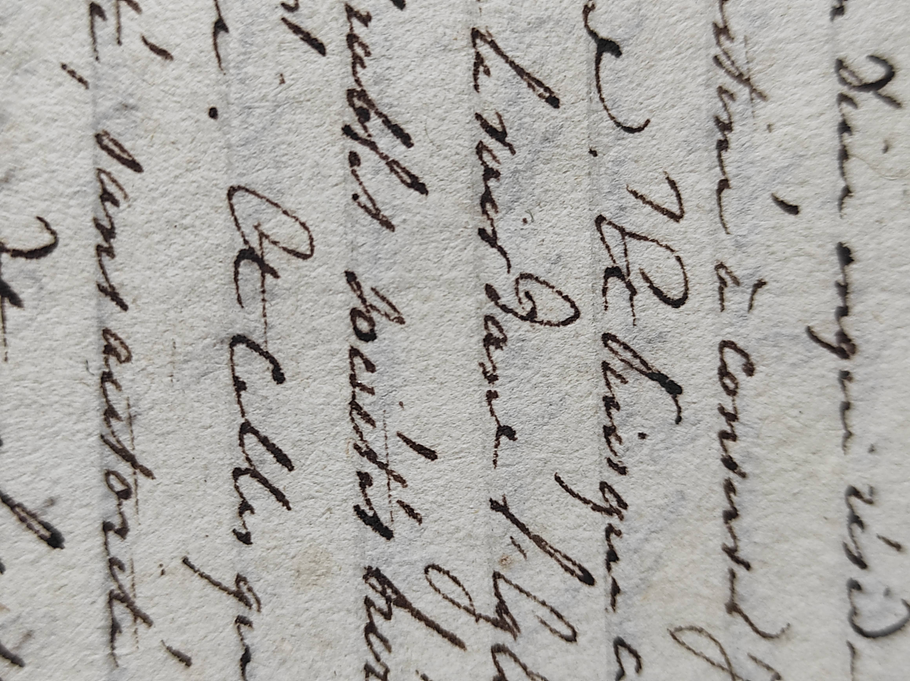
Ce sermon sur la foi et l'autorité de l'Église catholique est, dans le corpus de Brélévenez, le document le plus nettement daté par son contenu interne. Les références à un « déluge de contradictions », à un « pavé sanglant de notre histoire récente », aux « sophistes qui prêcheraient la destruction totale », à l'athéisme, au panthéisme et au matérialisme comme périls contemporains, et surtout l'exclamation finale « Dieu protège la France ! », situent indubitablement ce texte dans le contexte de la Monarchie de Juillet ou des années qui la précèdent immédiatement — vraisemblablement entre 1830 et 1845. Il s'agit d'un sermon apologétique au sens strict : son objet n'est pas l'édification morale ordinaire mais la défense rationnelle de la foi contre l'incrédulité organisée. La structure en trois temps — nécessité de la foi face aux crises du siècle, fécondité morale des mystères chrétiens illustrée par les Filles de Saint-Vincent-de-Paul en Orient, primauté de l'Église catholique sur les communions dissidentes — est caractéristique de la prédication apologétique française de la Restauration et de la Monarchie de Juillet, telle qu'elle se pratiquait dans les conférences de Notre-Dame de Paris inaugurées par Lacordaire en 1835. La mention des conversions anglaises et du Mouvement d'Oxford, évoquées comme signe de la vitalité catholique, renforce cette datation et situe le prédicateur dans un milieu informé des débats ecclésiaux européens. Le ton est délibérément polémique, avec une véhémence rhétorique — accumulations, exclamations, apostrophes — qui le distingue nettement des sermons moraux du même corpus, plus sobrement construits. Ce document est précieux pour comprendre comment la pastorale bretonne du second tiers du XIXe siècle intégrait les enjeux idéologiques nationaux dans la prédication paroissiale.
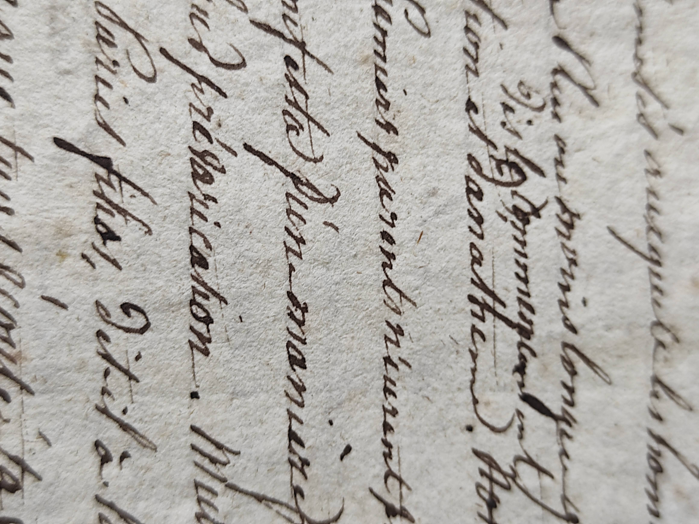
Ce sermon sur les tribulations constitue l'un des textes théologiquement les plus denses du corpus. Son verset directeur, Beati qui lugent (Mt 5, 4), est traité non comme une simple consolation mais comme le pivot d'une anthropologie chrétienne de la souffrance : la condition douloureuse de l'homme après la chute — résumée dans la formule de la Genèse spinas et tribulos germinabit tibi — y est lue comme condition nécessaire, non accidentelle, de la vie sur terre. Le prédicateur convoque une chaîne d'autorités scripturaires d'une ampleur remarquable : Job, les Psaumes, Jérémie, saint Paul, le Concile de Trente, et le récit de la faute d'Adam comme archétype de toute prévarication humaine. L'enchaînement doctrinal est rigoureux : la souffrance n'est pas un scandale mais un instrument de purification et de sanctification (percutiam et ego sanabo) ; elle réveille la foi là où la prospérité l'endort, comme l'illustre longuement l'exemple de David. La troisième partie, consacrée à la joie apostolique dans l'adversité, cite abondamment Paul pour montrer que la participation aux souffrances du Christ (socii passionum) est la voie normale de l'adoption filiale. On perçoit dans ce sermon l'influence de la tradition ascétique française du XVIIe siècle — Bossuet, Bourdaloue — dans la construction rhétorique en trois mouvements et dans la vision d'une Providence qui dispense biens et maux avec une égale sagesse. L'insistance sur le mérite des souffrances et leur pouvoir expiatoire s'inscrit pleinement dans la pastorale post-tridentine en usage dans les diocèses bretons jusqu'au milieu du XIXe siècle.
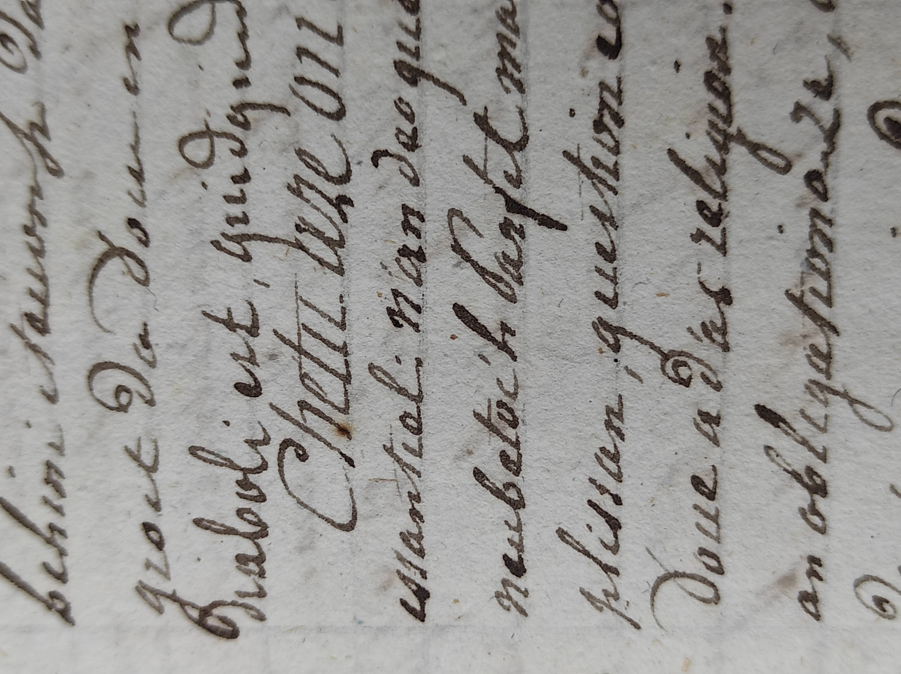
Ce sermon sur le petit nombre des élus, rédigé en langue bretonne et destiné à la paroisse de Prat dans le Trégor, est un document d'une double singularité au sein du corpus : il est le seul sermon en langue vernaculaire bretonne, et il traite d'un thème — la paucitas electorum — qui appartient à la grande tradition rigoriste de la prédication catholique d'Ancien Régime, de saint Jean Chrysostome jusqu'à Massillon et son célèbre sermon Sur le petit nombre des élus prononcé devant Louis XIV. Le verset directeur, Multi sunt vocati, pauci vero electi (Mt 20, 16), est cité d'emblée en latin puis immédiatement rendu en breton — Cals a dud a zo galvet, mes neubet a vero choaset —, ce bilinguisme structurel révélant une pratique homiléticale de médiation entre culture savante et culture populaire qui caractérise la pastorale bretonne des XVIIe–XVIIIe siècles. L'argumentation, en quatre parties, procède par accumulation de figures scripturaires de la sélection divine (Noé, Caleb et Josué, Loth, les trois jeunes de Babylone, Isaïe comparant les justes à des grappillons), avant de poser la question sotériologique centrale : par lequel des deux seuls chemins vers le salut — l'innocence baptismale conservée ou la vraie pénitence — le fidèle chemine-t-il ? La troisième partie, consacrée aux maximes du monde opposées à celles de l'Évangile, constitue le cœur pastoral du sermon : le prédicateur y dresse un tableau sévère des usages ordinaires de ses paroissiens (fréquentation des auberges, désordres de la jeunesse, aveuglement des parents) et convoque saint Augustin contre le « fleuve des coutumes humaines ». La péroraison, sous forme d'un jugement imaginaire prononcé dans l'église même, relève d'une technique rhétorique de visualisation eschatologique caractéristique de la prédication jésuite et sulpicienne. La mention finale Prat !!!, graphiquement emphatique, confirme que ce document est bien un sermon de paroisse, préparé pour une assemblée précise et un lieu précis — ce qui en fait un témoignage direct de la prédication populaire trégorroise du XVIIIe siècle.
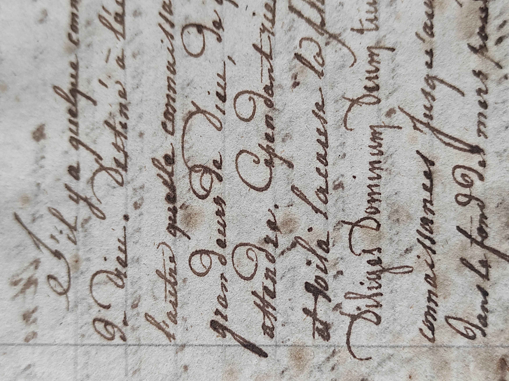
Ce sermon sur l'amour de Dieu, fondé sur le commandement évangélique de Matthieu 22, 37 — Diliges Dominum Deum tuum ex toto corde tuo —, constitue l'un des textes les plus amples et les plus construits du corpus. Son architecture en deux parties symétriques est classiquement scolastique : la première traite des grandeurs de Dieu comme motif d'amour ; la seconde, ses bienfaits envers l'homme, se déploie elle-même en trois degrés — ordre de la nature, ordre de la grâce, ordre de la gloire — selon une progression ascendante caractéristique de la théologie mystique augustinienne. L'incipit du sermon, visible sur la macrophotographie — « S'il y a quelque connaissance nécessaire à l'homme, c'est surtout celle de Dieu » —, s'inscrit dans la tradition des sermons sur la connaissance divine comme préalable à l'amour, tradition que l'on retrouve chez Bossuet et Fénelon. Le développement sur les bienfaits de Dieu dans l'ordre de la grâce est remarquable par sa densité sacramentelle : baptême, confirmation, pénitence, eucharistie y sont successivement convoqués dans un enchaînement qui épouse la logique du catéchisme tridentin. La citation Venite ad me omnes, associée à l'image du Dieu trônant dans ses tabernacles, révèle une forte sensibilité eucharistique, cohérente avec le renouveau de la dévotion au Saint-Sacrement dans la Bretagne du premier XIXe siècle. La conclusion, centrée sur l'anathème paulinien lancé contre quiconque n'aime pas Dieu (si quis non amat D. N. J. C. sit anathema), opère un renversement rhétorique efficace : après l'effusion de la deuxième partie, l'exhortation finale retrouve la sévérité d'un acte solennel, avant de s'achever dans une adresse personnelle et fervente au divin — sero te amavi, citation augustinienne implicite — qui confère à l'ensemble une tonalité à la fois pastorale et mystique.
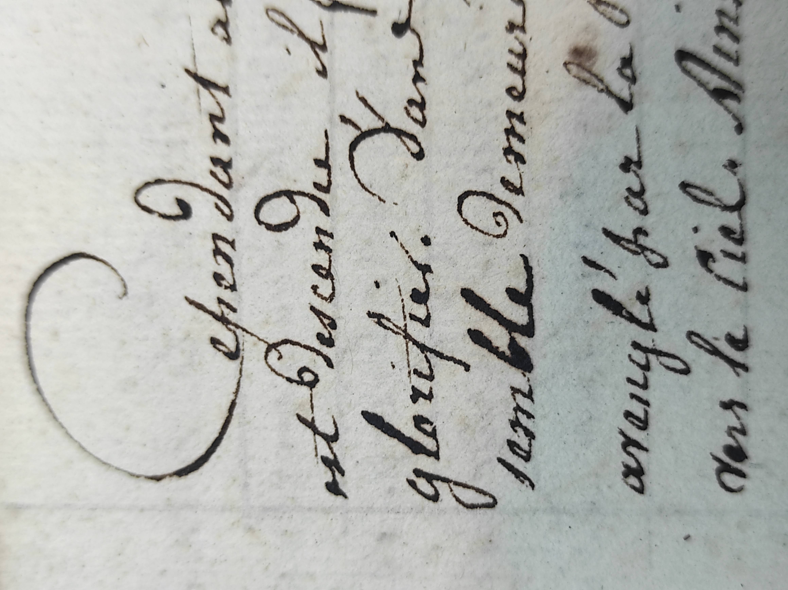
Ce sermon sur le soulagement des souffrances par la religion est le document le plus atypique du corpus à plusieurs égards. Son sujet n'est pas un thème scripturaire ou sacramentel classique, mais une apologie du christianisme comme force de charité sociale — thème qui le situe résolument dans le contexte idéologique de la Monarchie de Juillet, période de vive concurrence entre catholicisme et philosophies libérales ou socialistes naissantes. La mention explicite du choléra de 1832–1833, du dévouement des religieux catholiques à New-York, de Charles Borromée à Milan et des pestifères de Marseille, confère au texte une actualité polémique immédiate : le prédicateur oppose point par point la charité catholique à l'impuissance qu'il attribue au protestantisme, citant Voltaire à charge contre les ministres réformés qui auraient refusé de soigner les malades à Genève en 1543. Ce recours à Voltaire comme témoin malgré lui est une figure rhétorique apologétique caractéristique de la prédication ultramontaine des années 1830–1850. La structure du sermon est en deux parties nettement dissymétriques : la première, centrée sur l'œuvre universelle de la charité institutionnelle (ordres religieux, hôpitaux, missions), offre un panorama quasi encyclopédique des œuvres catholiques — sœurs grises, frères hospitaliers, capucins, missionnaires de Chine et d'Annam, moine maronite du Liban, missionnaire des forêts d'Amérique ; la seconde, consacrée à la gloire du christianisme dans les temps de crise, déploie la métaphore filée du naufrage et développe une théologie de l'épreuve comme révélateur de la vérité chrétienne. Le ton est nettement plus oratoire et militant que dans la plupart des autres sermons du corpus, avec des majuscules emphatiques dans la transcription (CROIX, OCEAN, NON NON) qui signalent probablement des effets de voix notés à l'usage du prédicateur. La référence aux « chemins de fer et canaux » bénis par le Christ témoigne d'une tentative d'ancrage dans la modernité industrielle, cohérente avec la pastorale sociale du catholicisme social de la première moitié du XIXe siècle. — Terminus post quem établi : 1833 par la mention explicite du choléra de 1832–1833 ; la référence aux chemins de fer comme réalité contemporaine connue de l'auditoire suggère une date vraisemblablement postérieure à 1837.
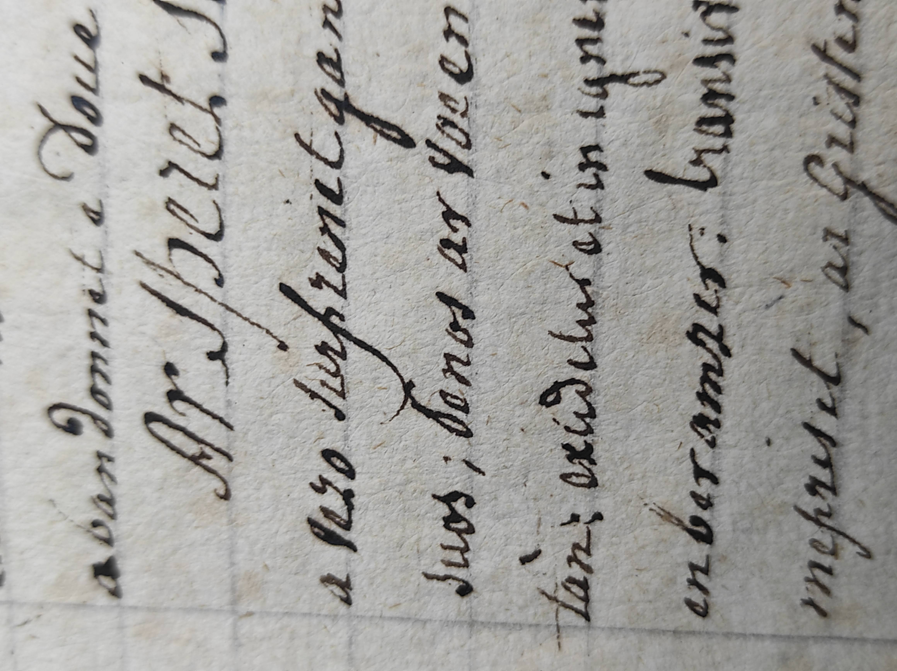
Ce sermon sur l'obligation de servir Dieu dès la jeunesse, rédigé en breton et fondé sur le verset de l'Ecclésiaste 12, 1 — Memento creatoris tui in diebus juventutis tuae, rendu immédiatement en breton : N'anconat quet o Creuer epad o Jaouanquis —, est le deuxième sermon en langue bretonne du corpus avec le sermon 15, et partage avec lui la même caractéristique formelle du bilinguisme enchâssé, les citations latines étant maintenues dans leur langue d'origine au sein d'un texte vernaculaire. Son sujet — la jeunesse comme temps privilégié et irremplaçable de la conversion — le rattache à un genre homilétique très répandu dans la prédication catholique post-tridentine, que l'on trouve notamment chez saint Jean Chrysostome, abondamment cité, et dans les missions populaires bretonnes des XVIIe–XVIIIe siècles. L'argumentation se déploie en deux parties symétriques : la première établit l'obligation stricte de servir Dieu pendant la jeunesse, en réfutant point par point la maxime mondaine du laissons passer la jeunesse ; la seconde propose les moyens concrets de tenir cette obligation — défiance de soi, fuite des occasions, prière, travail et solitude. Le prédicateur manie avec une grande efficacité rhétorique le procédé du retournement ironique : il cite le Saint-Esprit (Lætare, Juvenis, in adolescentia tua) non comme une permission de jouir, mais comme un avertissement redoutable — Dieu tient le compte de chaque pas sur le chemin de la volupté. La méditation sur la mort prématurée, illustrée par la citation du roi Ézéchias (in dimidio dierum meorum vadam ad portas inferi), et la figure des damnés avertissant les vivants depuis l'enfer ouvert, appartiennent au répertoire des missions rurales. La conclusion — adresse directe à Dieu demandant qu'il reçoive ses enfants pénitents et leur accorde une éternité heureuse — adopte la forme d'une prière collective qui devait être scandée ou reprise par l'assemblée, usage propre aux offices de mission en Basse-Bretagne.
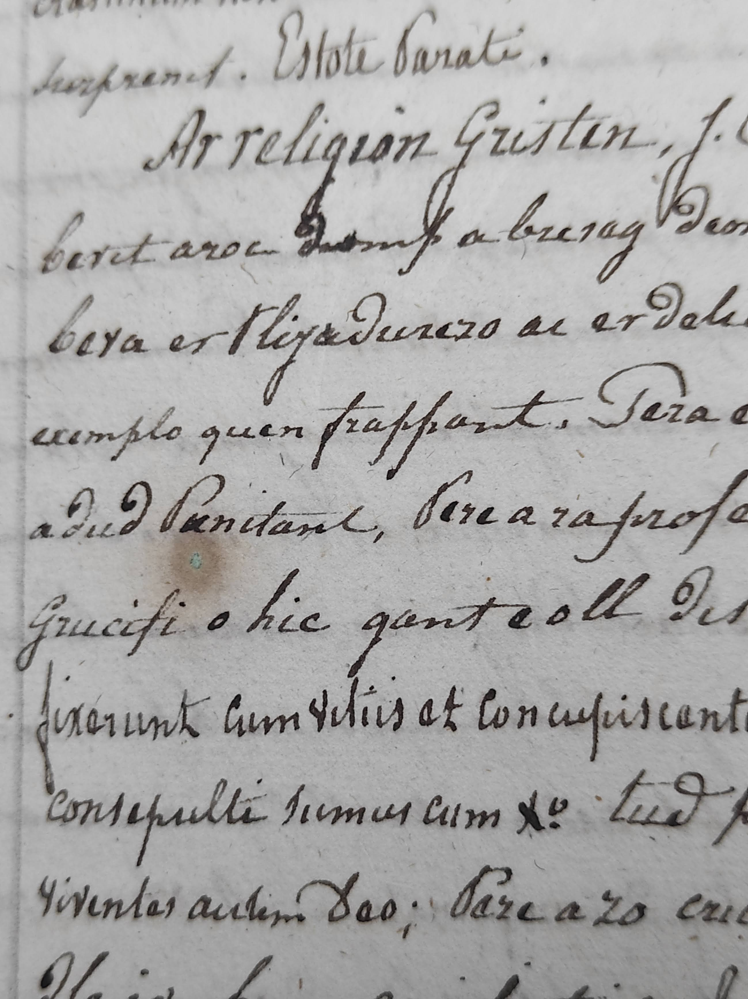
Ce sermon sur la nécessité de la pénitence, rédigé en breton, forme avec le sermon 18 un diptyque pastoral cohérent : là où le sermon 18 s'adressait à la jeunesse en l'exhortant à ne pas différer sa conversion, le sermon 19 s'adresse à tous les fidèles, sans distinction d'âge, pour leur démontrer que la pénitence est la seule voie de salut ouverte à des hommes déjà souillés par le péché. La citation directrice — Poenitentiam agite, appropinquavit enim regnum coelorum (Mt 3, 2) — est celle du Baptiste dans le désert, ce qui confère d'emblée au discours un caractère d'appel urgent, presque prophétique. L'argumentation, en deux parties articulées autour de la nécessité puis des qualités requises de la pénitence, est l'une des plus rigoureusement construites du corpus. La première partie accumule les autorités — Jésus-Christ en Luc, Jean-Baptiste, Pierre, Paul, le concile de Trente, saint Cyprien, saint Thomas — pour établir que la pénitence n'est pas un conseil mais un commandement absolu, et que son refus aggrave le péché lui-même. La deuxième partie, sur les qualités d'une vraie pénitence, distingue trois conditions : le changement intérieur du cœur (cor contritum et humiliatum, augustinien), la manifestation extérieure dans les actes, et la promptitude — le refus de la pénitence différée. Ce dernier point donne lieu à l'analyse la plus psychologiquement fine du corpus : le prédicateur dissèque avec précision le mécanisme de l'ajournement indéfini, depuis la jeunesse jusqu'à la mort, en montrant par des exemples concrets (les malades qui retrouvent la santé sans changer de vie, les pécheurs qui meurent sans avoir eu le temps de se réconcilier) que la pénitence de la dernière heure est toujours suspecte de n'être que contrainte par les circonstances. La figure récurrente de la secunda post naufragium tabula — image patristique de la pénitence comme planche de salut après le naufrage du péché originel — traduit à la fois la tradition scolastique et la familiarité maritime du Trégor côtier dont est issu ce manuscrit.
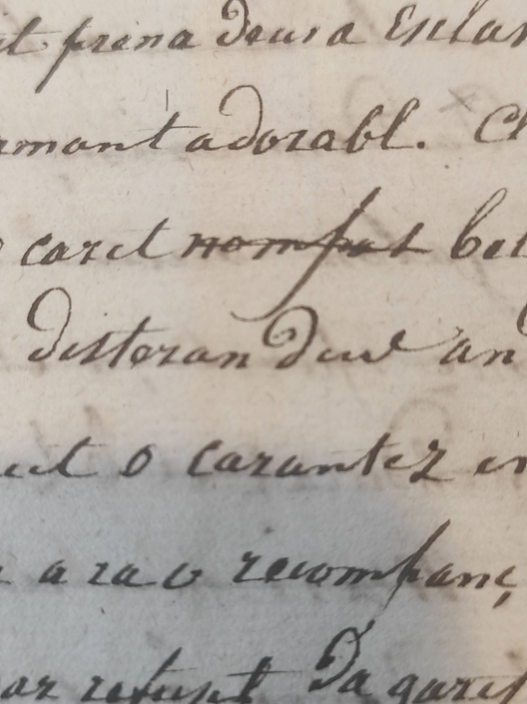
Ce sermon pour une première communion, rédigé en breton et fondé sur la parole de Jésus en Marc 10, 14 — Sinite pueros venire ad me, rendue en breton : Laset ar vugale da dostaat din —, est le dernier et le plus liturgiquement situé des sermons bretons du corpus. Son contexte d'usage est précis et unique dans l'ensemble : il s'agit d'une homélie prononcée lors d'une cérémonie de première communion, s'adressant simultanément aux enfants qui communient et à leurs parents et paroissiens témoins. Cette double destination structure toute la composition, qui alterne apostrophes aux enfants (bugale) et apostrophes aux fidèles adultes. L'argument central — Jésus-Christ, qui aimait les enfants lors de sa vie terrestre, continue de les appeler depuis son tabernacle — est développé à partir de la scène évangélique où les disciples voulaient éloigner les enfants, avant que le Sauveur ne les rappelle : Sinite parvulos venire ad me. La première partie du sermon élabore une théologie eucharistique de la première communion centrée sur trois dispositions requises — foi vive, conscience pure, amour ardent — que le prédicateur expose avec précision avant de lancer une double invitation solennelle : aux enfants préparés à s'avancer, aux non préparés à s'abstenir (recedite, recedite). La citation paulinienne de condamnation pour qui mange et boit indignement (qui manducat et bibit indigne, judicium sibi manducat et bibit) est intégrée dans les deux versions du texte, bretonne et française, soulignant que la gravité de l'enjeu est exprimée dans les mêmes termes pour les deux langues. La seconde partie, action de grâces après la communion, reprend le psaume 115 (Quid retribuam Domino pro omnibus quae retribuit mihi) et s'achève par une adresse aux parents, auxquels le prédicateur « rend » leurs enfants purifiés, leur enjoignant de conserver ce dépôt sacré par la fréquentation des sacrements et la sanctification personnelle — formule qui résume en une phrase la pastorale familiale bretonne du début du XIXe siècle.
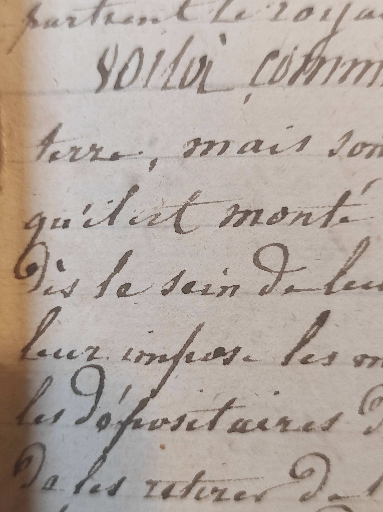
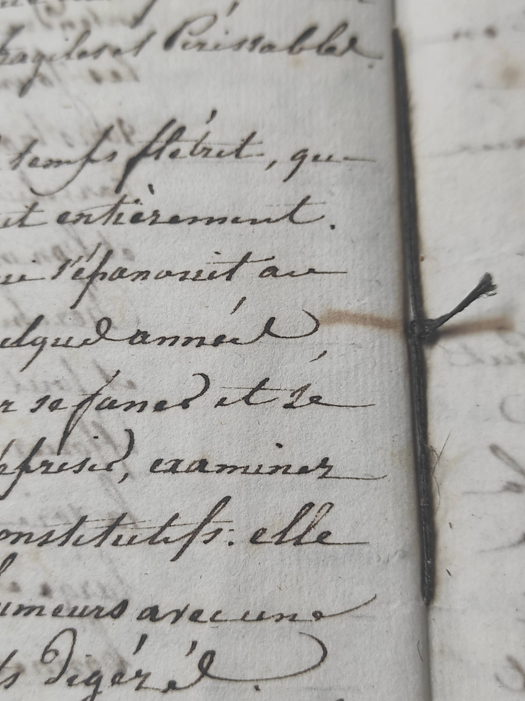
Ce sermon sur la voie étroite et la prière, dernier texte français du corpus, est incontestablement le plus littéraire et le plus ambitieux de l'ensemble sur le plan rhétorique. Son verset directeur — Quam arcta via, quae ducit ad vitam ! (Mt 7, 14) — n'est pas développé comme une menace mais comme un constat anthropologique : la plupart des hommes ne cherchent pas Dieu parce qu'ils sont entièrement absorbés par les soins du corps. La démonstration passe par une galerie de types humains — le marin, le laboureur, le commerçant, le passant des places publiques — tous mus par des préoccupations temporelles, aucun occupé de son âme. Cette anthropologie du quotidien, qui rappelle les Sermons de Chrysostome dans leur observation de la vie urbaine, est doublée d'une métaphore filée particulièrement élaborée : l'âme est comparée successivement au conducteur d'un char, au pilote d'un vaisseau et au musicien qui tient l'instrument — quand elle relâche ou tend les cordes outre mesure, l'harmonie de la vertu se détruit. La deuxième partie, consacrée à la prière, développe une critique de la prière vaine et intéressée — qui demande beauté, richesses, honneurs — et lui oppose la formule du Pater comme seule prière juste. Les trois vertus théologales — foi, espérance, charité — sont ensuite traitées comme les objets propres de la prière chrétienne, dans un développement d'une belle ampleur : le passage sur l'espérance est particulièrement remarquable, opposant à l'incrédulité qui « descend dans le cœur comme la nuit avec toutes ses ténèbres » l'espérance qui débrouille le chaos et explique l'énigme de l'existence. La conclusion sur la charité, avec son évocation de la même table eucharistique dressée pour l'enfant de l'esclave et le fils de l'homme libre, introduit une dimension d'égalité évangélique et sociale qui dépasse le cadre pastoral ordinaire du corpus et fait de ce sermon le texte théologiquement le plus achevé de l'ensemble.
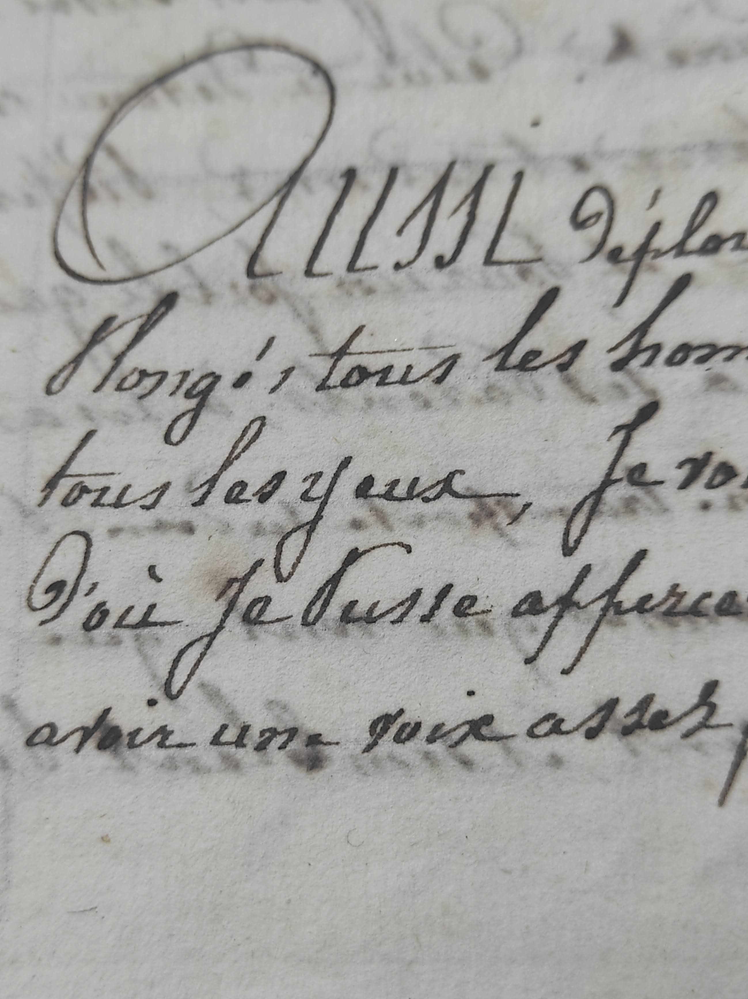
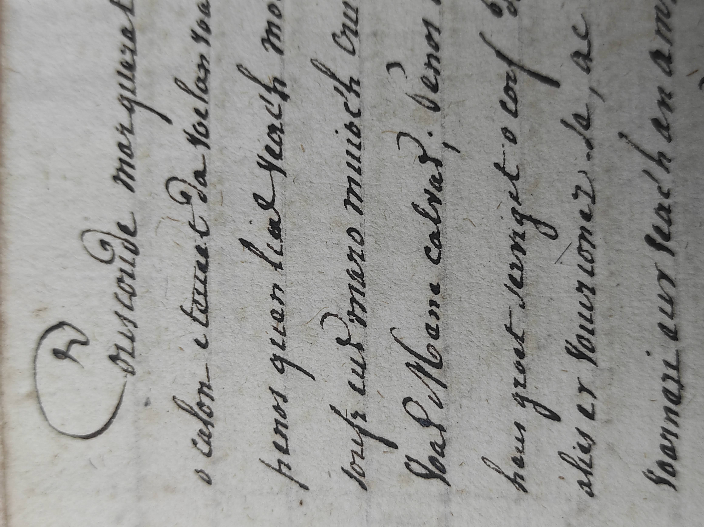
Ce sermon sur le péché mortel, rédigé en breton et fondé sur la parole de Jésus aux Pharisiens en Matthieu 23 — Similes estis sepulchris dealbatis, « Vous êtes semblables aux sépulcres blanchis » —, est le plus complexe et le plus théologiquement dense des sermons bretons du corpus. Il se distingue par sa structure tripartite rigoureuse, appliquée à l'analyse des effets du péché mortel sur l'âme : premier effet, il tue l'âme en lui ôtant la grâce de Dieu (Annec quæ peccavit, ipsa morietur) ; deuxième effet, il la dépouille des vertus acquises (nident Aspoliavit eam) ; troisième effet, il rend toutes ses actions inutiles et sans mérite. Cette analyse trifide, héritée de la théologie morale scolastique, est déployée avec une densité de références patristiques remarquable : saint Paul, saint Augustin, saint Cyprien, saint Bernard, saint Basile, Isaïe, Jérémie, saint Jacques, saint Jean Chrysostome sont convoqués dans les seules premières pages. L'image directrice du sépulcre blanchi — beau au dehors, plein d'ossements au dedans — est développée dans une lecture ecclésiologique et morale qui vise directement l'hypocrisie du pécheur mondain : devant les hommes il paraît vivant et respectable, devant Dieu il est un mort que son corps transporte comme un cercueil (fumus tuum ipse circumportat). La partie centrale, consacrée à la méditation sur la Passion, emploie un procédé rhétorique d'une rare intensité : le prédicateur demande à ses auditeurs de se placer en esprit entre Jésus crucifié d'un côté et leurs péchés de l'autre — inter hæc duo positis —, et de mesurer qu'ils sont à la fois la cause et l'instrument de cette crucifixion. La conclusion suit le modèle du discours de saint Pierre aux Israélites après la Pentecôte, dont les auditeurs se regardaient en demandant quid faciemus ? — et le prédicateur reprend la réponse apostolique : Pœnitentiam agite. Le signe ✠, reproduit dans le texte breton comme marque d'adresse directe à l'assemblée (mes frères ou chrétiens selon le contexte), constitue un dispositif oratoire propre à ce seul sermon du corpus.
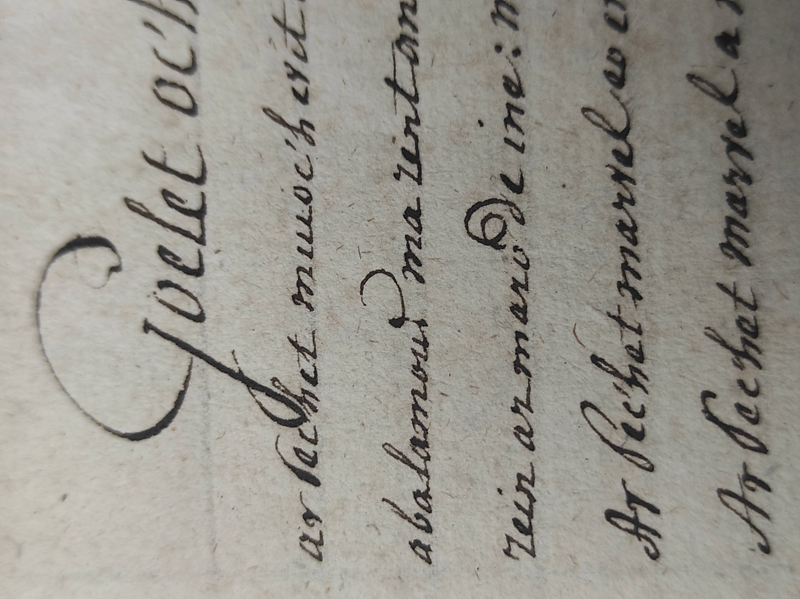
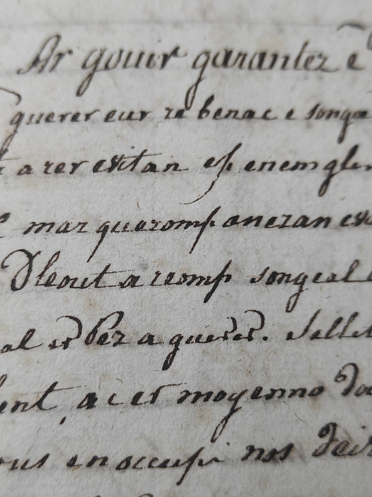
Ce sermon pour la fête du Sacré-Cœur, rédigé en breton et articulé autour du verset Erit cor meum ibi cunctis diebus, est le document le plus explicitement festif et dévotionnel du corpus breton. Son ancrage liturgique est précis — la fête du Sacré-Cœur, instituée universellement en 1856 par Pie IX mais déjà célébrée dans de nombreux diocèses français depuis le XVIIIe siècle sous l'influence de saint Jean Eudes et de la bienheureuse Marguerite-Marie Alacoque — ce qui en fait probablement l'un des sermons les plus tardifs de l'ensemble, postérieur à 1830 au moins. L'exorde, fondé sur la question rhétorique de saint Paul (Quis ergo nos separabit a charitate Christi ?, Rm 8, 35), est développé dans une direction méditative et affective : le prédicateur invite l'assemblée à contempler les preuves successives de l'amour de Jésus-Christ pour les hommes — vie cachée à Nazareth, vie publique, Passion, institution de l'Eucharistie — avant d'aborder le don du Cœur comme ultime dépassement de cet amour. La théologie eucharistique qui sous-tend le sermon est entièrement ordonnée à la dévotion du Sacré-Cœur : la Présence Réelle dans le tabernacle est présentée non comme un mystère abstrait mais comme une relation personnelle quotidienne et attentive, que le pécheur ingrat néglige ou offense. Les trois effets du véritable amour selon saint Justinien — penser souvent à l'aimé, lui accorder ce qu'il désire, souffrir pour lui sans se plaindre — structurent la deuxième partie comme un examen de conscience pratique adressé directement aux fidèles. La question finale — Amas me ?, celle-là même que le Christ posa à Pierre au bord du lac — constitue la pointe rhétorique de l'ensemble : retournée vers l'assemblée, elle force chaque auditeur à se mesurer à l'Apôtre et à répondre en son for intérieur. La citation augustinienne implicite — agnoscit bos possessorem suum (Is 1, 3) — appliquée à l'insensibilité humaine envers Dieu, rapproche ce sermon des sermons sur l'amour de Dieu (sermon 16) et confirme la cohérence doctrinale d'ensemble du corpus.
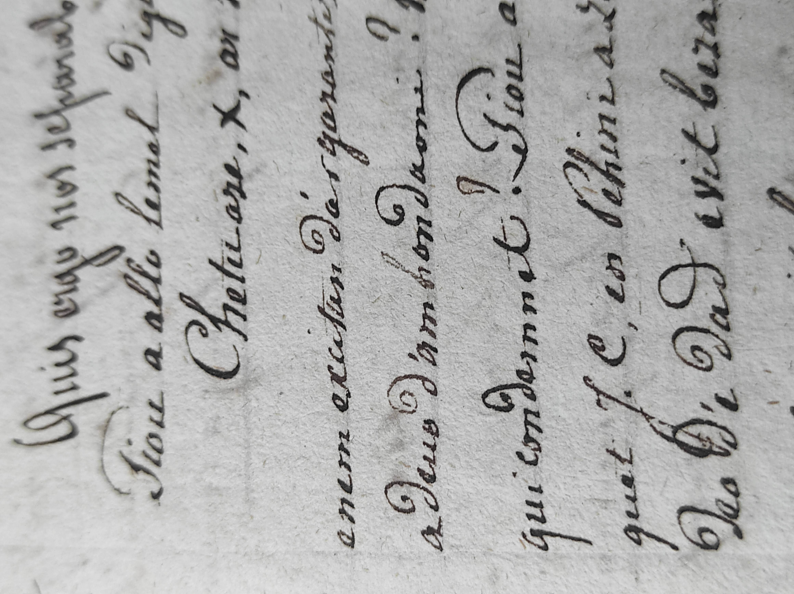
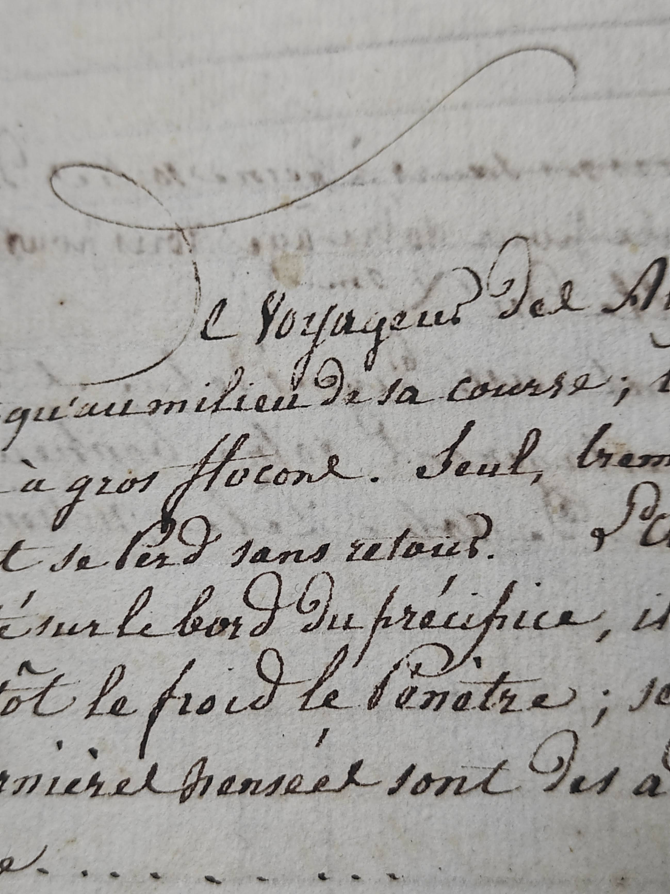
Ce sermon sur les bienfaits miraculeux du christianisme est, avec le sermon 17, l'un des deux textes apologétiques du corpus les plus explicitement ancrés dans la conjoncture politique et intellectuelle du second quart du XIXe siècle. Son verset directeur — Venite ad me omnes qui laboratis et onerati estis et ego reficiam vos (Mt 11, 28) — est moins le point de départ d'une exégèse que le prétexte d'une démonstration : le prédicateur entend montrer que le christianisme est la seule force civilisatrice durable, en opposant sa fécondité charitable à la stérilité prétendue de l'islam et à la dégradation morale de la Chine — arguments récurrents dans la littérature apologétique catholique de l'époque (Chateaubriand, de Bonald, Lacordaire). La mention nominale des régicides et des sociétés secrètes — Fieschi, Pépin, Alibaud, Meunier, Darmès — tous auteurs d'attentats contre Louis-Philippe entre 1835 et 1840 — fournit un terminus post quem précis : le sermon ne peut être antérieur à 1840, et son ton de réquisitoire contre le fouriérisme et le saint-simonisme le situe dans le contexte des grandes missions populaires urbaines de la Monarchie de Juillet, auxquelles participaient activement les jésuites et les lazaristes. La structure du sermon est délibérément cumulative plutôt que syllogistique : une série de récits héroïques — les Ursulines de Dieppe fondant l'hôpital de Québec, les filles de la Charité à Brienne en 1814, le religieux du Saint-Bernard sauvant le voyageur des Alpes — constitue une sorte d'hagiographie collective de la charité catholique, dont chaque épisode est présenté comme une réfutation par les faits de l'accusation d'obscurantisme portée contre l'Église. La figure de Vincent de Paul, désigné sans être nommé (« un homme qui est le génie de la miséricorde »), traverse le cœur du sermon comme le paradigme de la charité organisée. La péroraison, opposant le peuple élevé dans la foi à celui élevé hors de la foi, est un topos du catholicisme social de cette période, que l'on retrouve presque mot pour mot dans plusieurs des sermons de Lacordaire à Notre-Dame de Paris (1835–1836).
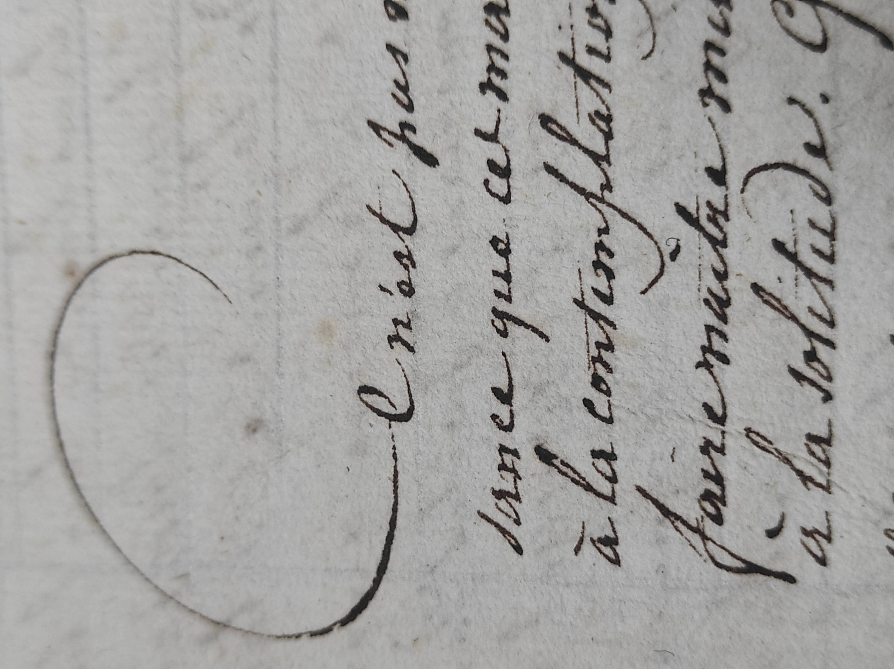
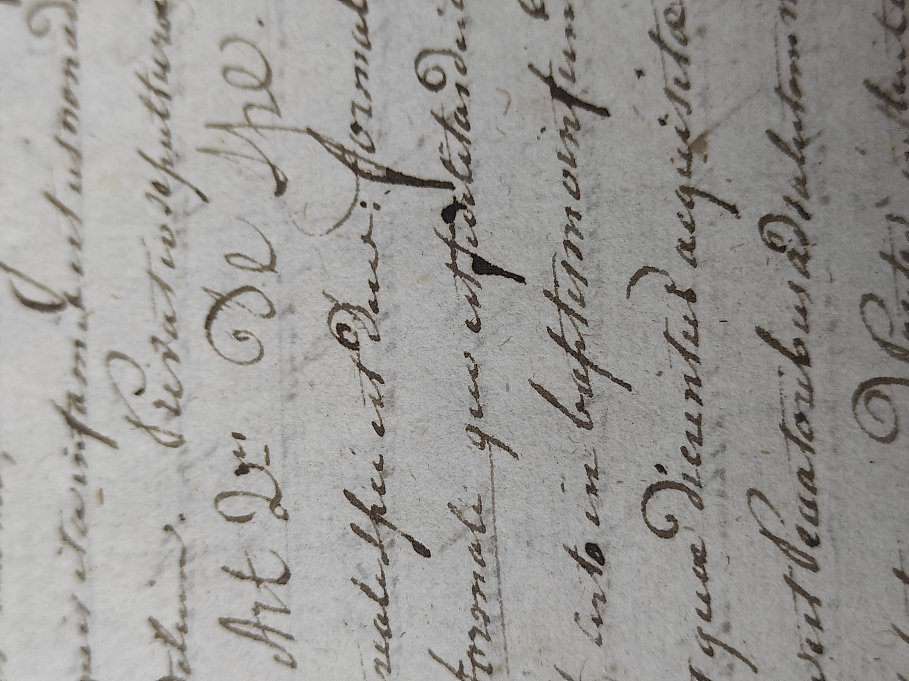
Ce document est le seul du corpus à ne pas être un sermon. Il s'agit d'un traité de théologie morale rédigé principalement en latin, avec des développements en français, dont la nature même — la langue, le genre, la structure, le contenu — le distingue radicalement de l'ensemble des pièces précédentes et pose des questions d'identification et de provenance qui méritent un commentaire étendu.
Sur le plan formel, le texte est organisé en capita (chapitres) et articuli (articles) successifs — Caput prim. De Præceptis Decalogi, Art. 2. De Spe, puis un développement De Religione — selon la structure canonique des traités de théologie scolastique tels qu'ils étaient enseignés dans les séminaires et les facultés de théologie catholiques du XVIIe au XIXe siècle. Cette architecture rappelle directement les Institutiones theologiae moralis d'Alphonse de Liguori ou les manuels de théologie morale utilisés dans les séminaires français post-concordataires, notamment les Institutiones theologicae de Le Tourneux ou celles en usage au séminaire de Saint-Brieuc dans la première moitié du XIXe siècle.
Sur le plan du contenu, le traité couvre en quelques folios une matière considérable. La partie De Spe distingue rigoureusement l'objet matériel et l'objet formel de l'espérance théologale (objectum spei est Deus : formale, bonitas ejus : formale quod est fidelitas divina), oppose l'espérance infuse reçue au baptême (certo in baptismo infusa) aux vertus acquises (quae dicuntur acquisitae), et classe les péchés contre l'espérance — désespoir et présomption — avec une précision canonique qui suppose une formation dogmatique solide. La partie De Religione traite successivement du serment (juramentum), du vœu (votum), du sacrilège — avec les distinctions classiques entre sacrilège réel, personnel et local — et débouche sur une série de questions de cas (quaestiones) d'une précision remarquable : vol dans une église, toucher du calice vide, profanation de l'huile sainte, excommunication réservée au souverain pontife ou à l'évêque. Ces cas de conscience correspondent très exactement au genre des casus theologici traités lors des retraites pastorales annuelles des diocèses, où le clergé était soumis à un examen périodique de théologie morale pratique.
Un passage est d'un intérêt historique exceptionnel : la question sur l'obligation d'assister à la messe paroissiale pendant trois dimanches consécutifs est suivie d'une réponse précisément datée et localisée — Episcopus Sancti-Brioci, in schola Theologiae praesidens, hanc doctrinam suam fecit et approbavit die 18 julii 1833 — et praesertim in Recessu pastorali ejusdem anni qui mense septembris Sancti-Brioci habitus fuit. Cette note situe le document dans le cadre de la retraite pastorale du clergé du diocèse de Saint-Brieuc de septembre 1833, présidée par l'évêque en personne. Le scripteur n'est donc pas un simple prédicateur de paroisse mais un clerc en formation ou en exercice pastoral, ayant assisté à ces sessions et consigné les décisions doctrinales de son évêque dans ce document de travail. La présence, dans les mêmes folios, de notes éparses sur les conciles œcuméniques (Nicée I et II, Constantinople I, II, III, Éphèse, Chalcédoine, avec mention des hérésies nestorienne, eutychéenne et monothélite) confirme qu'il s'agit d'un cahier de cours ou de notes pastorales, plutôt que d'un texte destiné à la prédication. Les sections en français mêlées au latin latin — notamment sur le magnétisme animal et le somnambulisme, traités comme une question de morale pastorale susceptible de relations avec le démon — révèlent une date compatible avec la vogue du mesmérisme dans les années 1820–1840, et une préoccupation pastorale bien attestée dans le clergé breton de cette période.
La présence de ce traité au sein du corpus de Brélévenez suggère que le ou les rédacteurs des sermons du corpus et l'auteur de ce traité appartenaient au même milieu clérical — vraisemblablement un prêtre du diocèse de Saint-Brieuc, formé au séminaire diocésain dans les années 1820–1830, ayant conservé ensemble ses notes de théologie et ses textes de prédication comme instruments de travail pastoral.
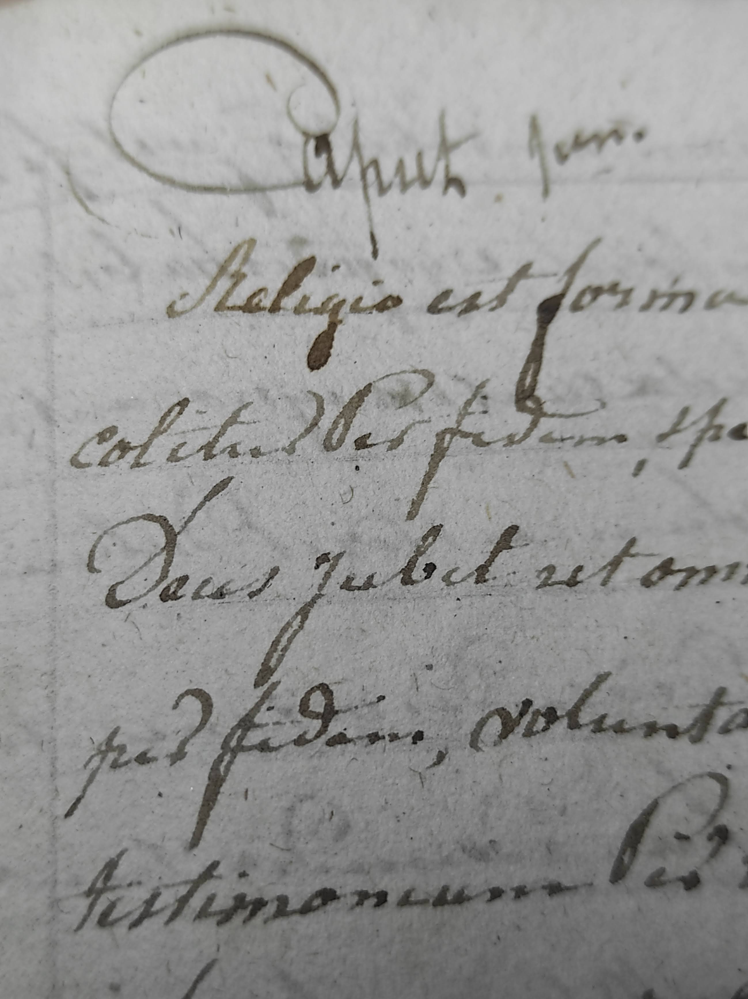
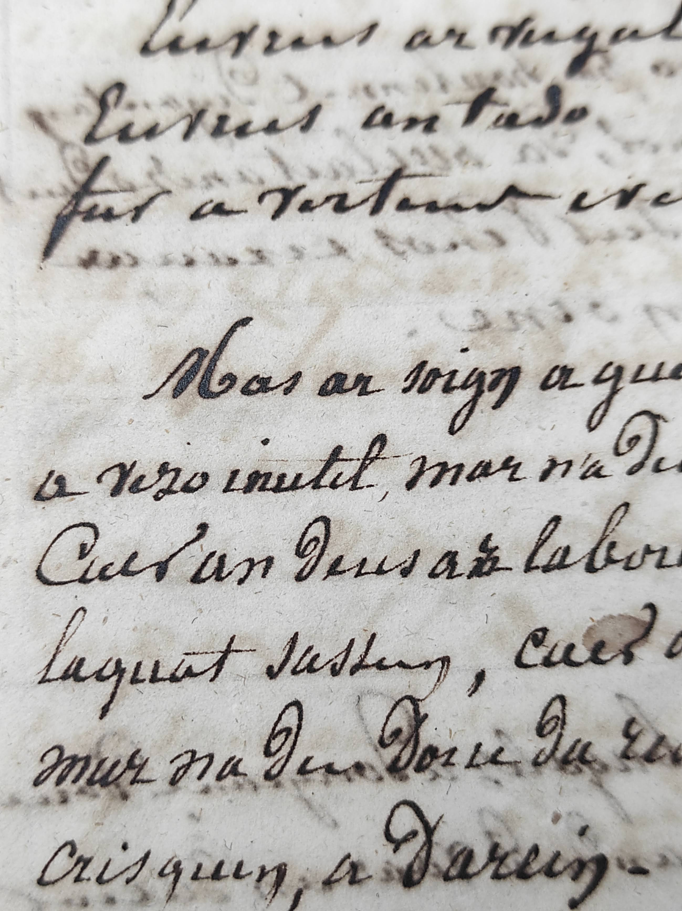
Ce sermon de retraite préparatoire à la Confirmation s'ouvre sur la parole de l'ange aux bergers (Lc 2, 10) et en fait le paradigme de toute annonce sacramentelle : l'Église répète à chaque génération la Bonne Nouvelle inaugurale, et la Confirmation en est l'accomplissement adulte. La structure rhétorique est tripartite et s'appuie sur trois lieux sacrés convoqués comme témoins eschatologiques — la chaire, le tribunal de la pénitence et la table de la Communion —, chacun appelé à témoigner « pour ou contre » le confirmand au jugement dernier. Le sermon s'adresse simultanément à deux auditoires distincts : les enfants qui entament leur retraite, et leurs parents, dont la responsabilité éducative est longuement instruite. Cette double interpellation traduit une ecclésiologie de la transmission : la grâce sacramentelle ne s'effectue pleinement que si elle est reçue dans une famille chrétienne pratiquante. L'usage de l'épisode de la robe baptismale présentée à l'apôtre constitue un topos catéchétique d'origine médiévale, ici mis au service d'une morale de la fidélité post-baptismale. La langue bretonne du texte, mêlée de formules latines liturgiques, témoigne d'une prédication bilingue vraisemblablement destinée à une paroisse rurale du Trégor ou du Goëlo au tournant du XIXe siècle, dans un contexte de renouveau missionnaire marqué par l'influence des congrégations lazaristes et de la Mission de Bretagne.
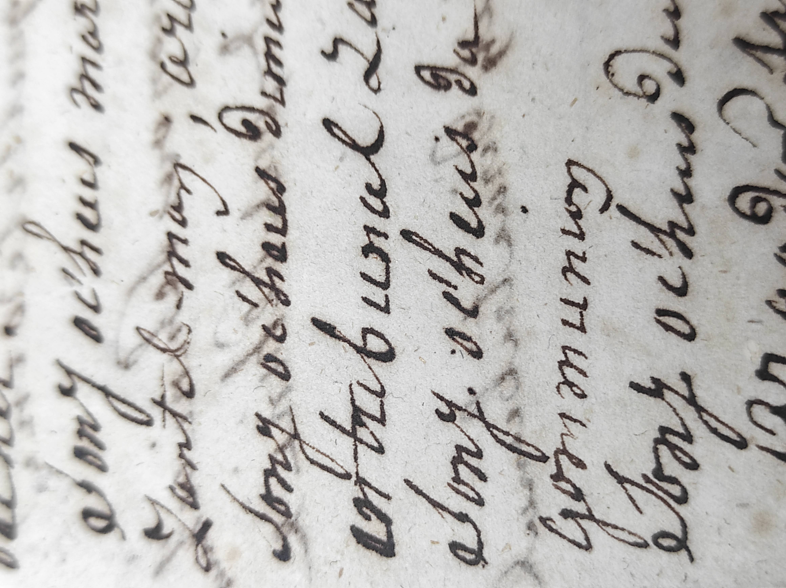
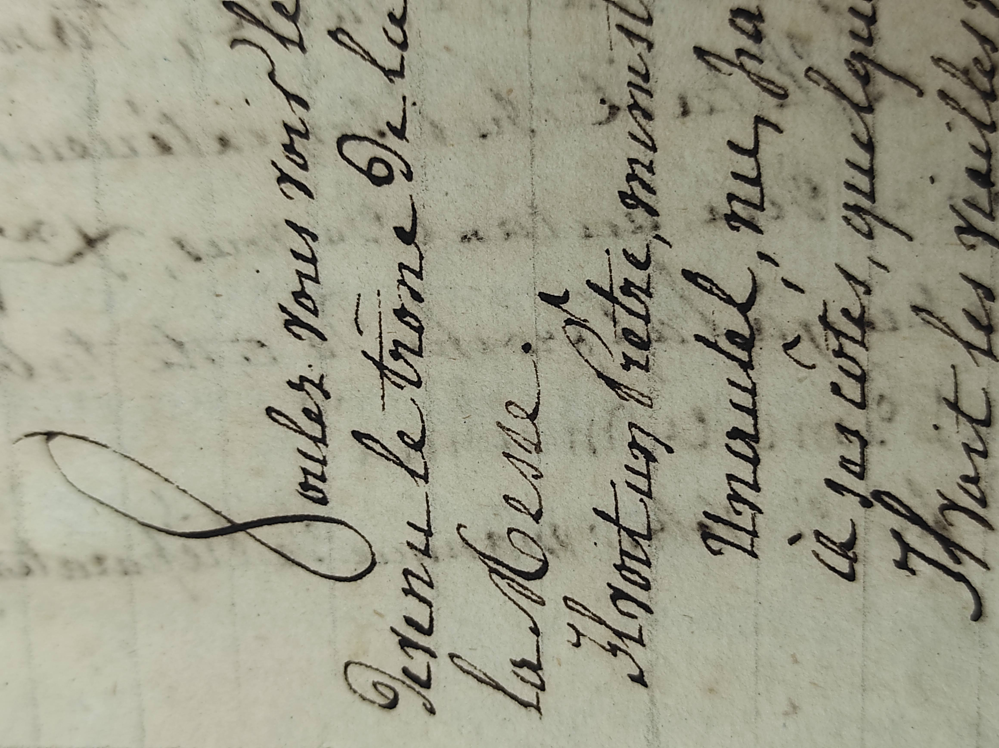
Ce sermon sur la tiédeur dans le service de Dieu, fondé sur l'injonction paulinienne de Romains 12 (Spiritu ferventes, Domino servientes), se distingue par sa tonalité entièrement française et sa facture rhétorique soignée, qui le rapproche davantage de la tradition homilétique néo-classique que de la prédication populaire bretonne. Le prédicateur y développe une théologie de la vie de foi entendue comme substitution des sentiments évangéliques aux sentiments naturels — une formulation d'inspiration sulpicienne que l'on retrouve chez Tronson et dans les Conférences ecclésiastiques du séminaire de Paris. La tiédeur y est diagnostiquée non comme un péché mais comme une extinction progressive de la ferveur sacramentelle, dont les symptômes sont minutieusement décrits : attitude distraite à la messe, communion sans préparation ni action de grâce, tolérance complaisante envers les péchés véniels. L'argumentation s'appuie sur deux exempla historiques remarquables — la conversion d'Alexandre devant le Grand Prêtre, et la stupeur de l'empereur Valens à Césarée face à saint Basile —, qui servent à démontrer que la ferveur extérieure visible est une force d'édification et de conversion. Le sermon culmine dans une phénoménologie de l'habitude liturgique, décrite comme le principal ennemi de la piété : l'habitude efface la crainte du sacré et dégrade les pratiques en routine vide, à l'image des Israélites murmurateurs malgré les prodiges divins. Cette réflexion sur la mémoire spirituelle et la première ferveur constitue l'une des pages les plus intérieures du corpus.
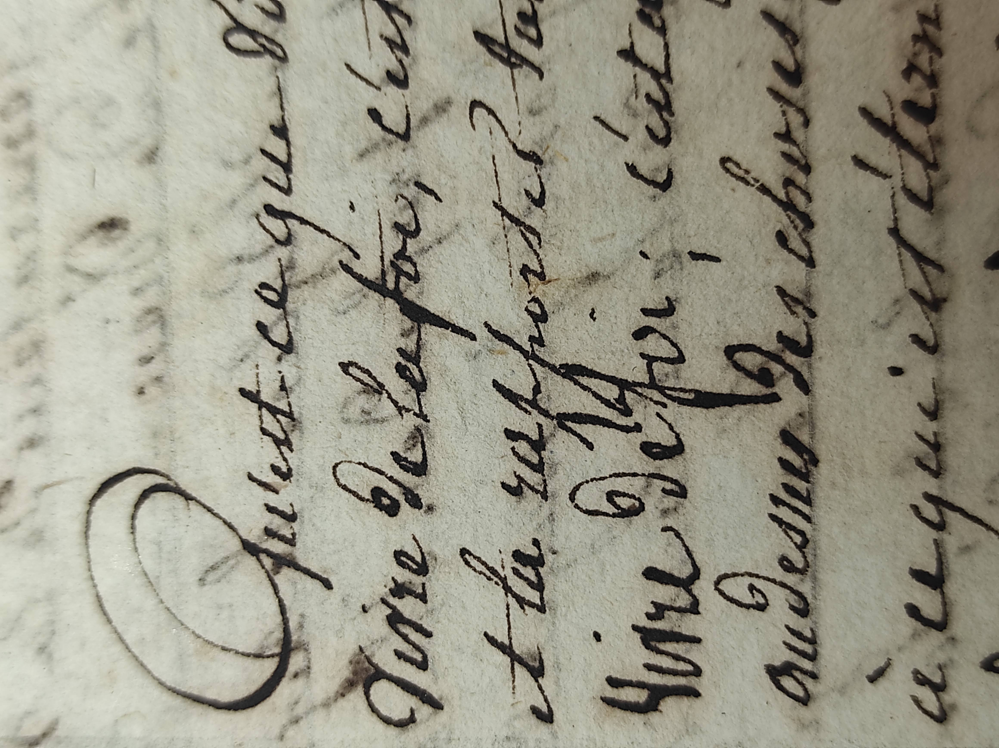
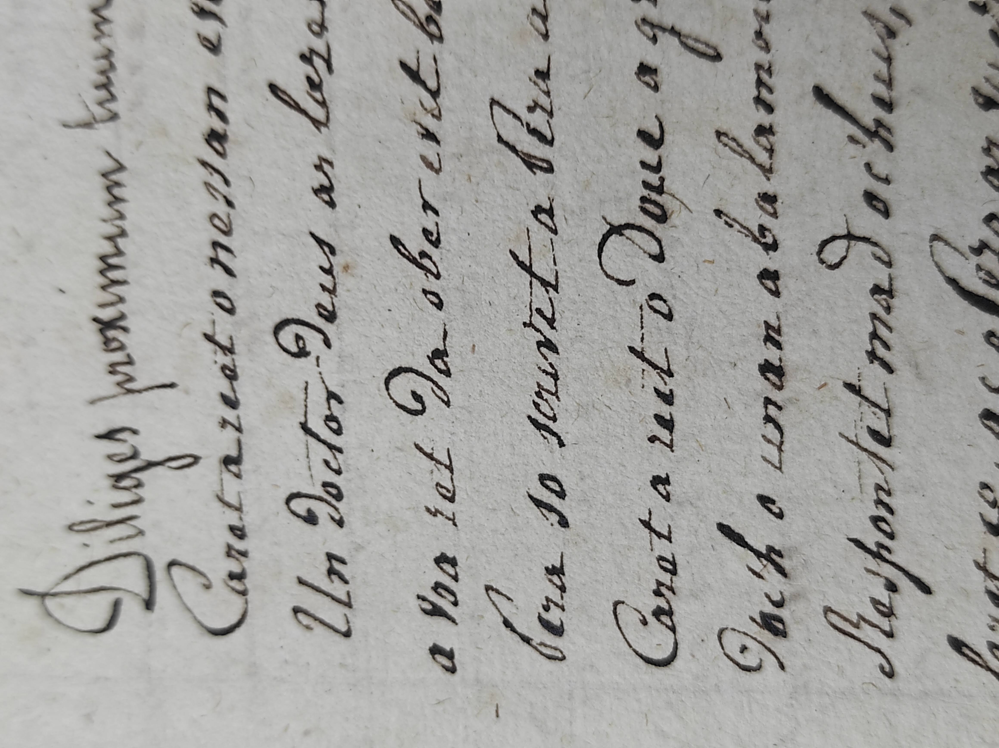
Ce sermon sur la charité fraternelle, fondé sur le commandement évangélique de Matthieu 22, 39 (Diliges proximum tuum sicut te ipsum), est l'une des pièces théologiquement les plus élaborées du corpus breton. Rédigé en breton trégorrois avec des citations latines encadrantes, il développe une doctrine de la charité en trois registres distincts. Le premier, anthropologique, pose la question du fondement de l'amour du prochain : ni la nature, ni l'intérêt, ni les qualités humaines ne sauraient en constituer le motif légitime, seul Dieu pouvant servir de principe et d'objet de tout amour véritable. Le deuxième registre, scripturaire et patristique, s'appuie sur saint Paul (Omnia credit, omnia sperat, omnia sustinet, 1 Co 13) et sur saint Jean Chrysostome pour définir les marques de la charité authentique : patience, douceur, absence de jalousie, d'orgueil et d'intérêt propre. Le troisième registre, pastoral et eschatologique, traite de la responsabilité de chacun dans le salut du prochain : le mauvais exemple est érigé en péché grave dont Dieu demandera un compte terrible, tandis que la conversion des âmes est présentée comme la forme la plus haute de l'amour fraternel, supérieure même au partage des biens matériels. Le sermon se clôt sur une citation de saint Pierre exhortant à dépouiller toute malice, et sur une prière finale pour le renouvellement de la face de la terre — image empruntée au Psaume 104 —, inscrivant ainsi la charité individuelle dans une perspective cosmique de régénération. L'usage du breton trégorrois dans un discours aussi densément articulé témoigne d'une maîtrise rhétorique et théologique remarquable, et d'un souci constant d'atteindre une assemblée rurale dans sa propre langue.
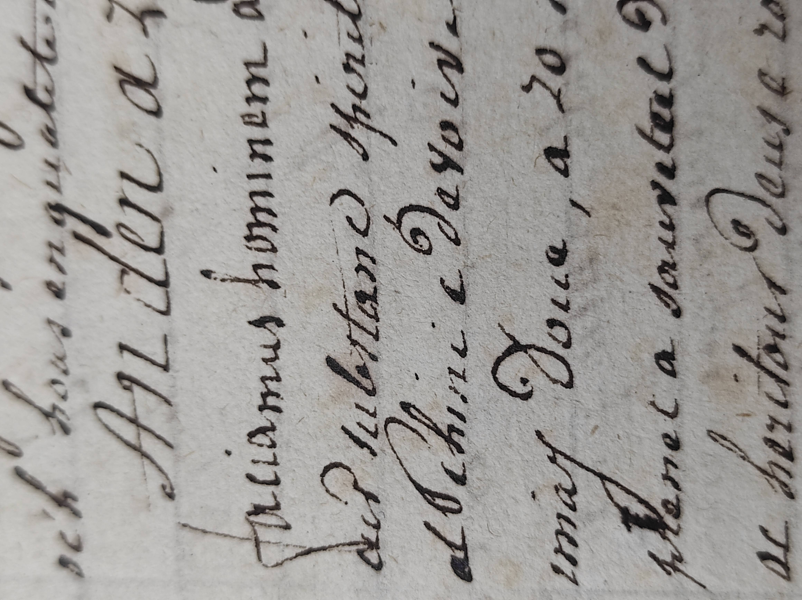